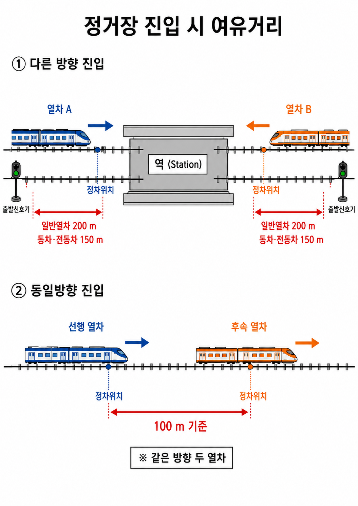

??理쒖쥌 泥댄겕由ъ뒪??/h3>
PART 1. 泥좊룄李⑤웾?댁쟾洹쒖튃 ??湲곕낯 洹쒖젙??/span>
C-01湲곕낯 ?⑹뼱 ?뺤쓽
| ?⑹뼱 | ?뺤쓽 |
|---|---|
| ?뺢굅??/b> | ?ш컼 ?밴컯, ?붾Ъ ?곹븯, ?댁감 議곗꽦, 援먰뻾쨌????μ냼 |
| 蹂몄꽑 | ?댁감 ?댁쟾???곸슜?섎뒗 ?좊줈 |
| 痢≪꽑 | 蹂몄꽑???꾨땶 ?좊줈 |
| ?꾧툒李?/b> | 愿?듭젣?숆린???쒕룞?돠룹븬?κ퀎쨌李⑥옣蹂쨌?섏젣?숆린 ?μ튂 李⑤웾 |
| 議곗감??/b> | 李⑤웾???낇솚쨌?댁감 議곗꽦???꾪빐 ?ъ슜?섎뒗 ?μ냼 |
| 援щ궡?댁쟾 | ?뺢굅?Β룹감?됯린吏 ???낇솚?좏샇???곕Ⅸ ?댁쟾 |
| 臾댁씤?댁쟾 | ?щ엺???댁감 ?덉뿉??吏곸젒 ?댁쟾 ??????愿?쒖떎 ?먭꺽議곗쥌 |
| ?댁감 | ?꾩떆泥좊룄?댁쟾洹쒖튃 ??議곗젣3?? 蹂몄꽑 ?댁쟾 紐⑹쟻?쇰줈 ?몄꽦?섍퀬 ?댁감踰덊샇瑜?遺?ы븳 李⑤웾 ??援??? 泥좊룄李⑤웾?댁쟾洹쒖튃 ??議곗젣5?몄쓽 ?댁감 ?뺤쓽??2021.10.26. 媛쒖젙?쇰줈 ??젣??/span> |
| 李⑤웾 | ?댁감瑜?援ъ꽦?섎뒗 1?됱쓽 泥좊룄李⑤웾 |
?꾧툒李?援ъ꽦 ?붽린: "?쒖븬李⑥닔" (?쒕룞???뺣젰怨?李⑥옣蹂+?섏젣?숆린)
?좑툘 "?댁감" ?뺤쓽 ??泥좊룄李⑤웾?댁쟾洹쒖튃 ??議곗젣5?몃뒗 2021.10.26. ??젣?? ?꾪뻾 ?뺤쓽???꾩떆泥좊룄?댁쟾洹쒖튃?먮쭔 議댁옱 (op_003 異쒖젣 ?ъ씤??
?대줎 諛곌꼍: ?댁감?댁쟾洹쒖튃???듭떖 ?⑹뼱?ㅼ? ?쒗뿕??吏곸젒 異쒖젣?⑸땲?? ?뱁엳 ?뺢굅??/strong>(?ш컼쨌?붾Ъ쨌援먰뻾 湲곕뒫)怨??꾧툒李?/strong> 援ъ꽦 ?붿냼 ?붽린媛 以묒슂?⑸땲??
???꾧툒李??⑸룄: ?댁감 留??ㅼ뿉 ?곌껐?섎뒗 李⑤웾?쇰줈, 李⑥옣(?밸Т?????묒듅???댁감 ?댄뻾??媛먯떆쨌?쒖뼱?섍퀬 鍮꾩긽 ???섎룞?쇰줈 ?댁감瑜??뺤??쒗궗 ???덈룄濡???李⑤웾. "?꾧툒(渶⒵?"? ?띾룄瑜???텛嫄곕굹 鍮좊Ⅴ寃?議곗젅?쒕떎???섎?.
??4媛吏 ?μ튂 媛곴컖????븷:
??愿?듭젣?숆린???쒕룞??/strong>: 怨듦린?쒕룞???곗씠???뺤텞怨듦린瑜???ν븯怨? 釉뚮젅?댄겕 ?덈? 李⑥텞??諛李⑹떆耳?媛먯냽쨌?뺤??쒗궎???μ튂
???뺣젰怨?/strong>: ?쒕룞愿(愿?듭젣?숆린) ??怨듦린?뺣젰???쒖떆 ??李⑥옣???쒕룞 ?곹깭瑜?吏곸젒 ?뺤씤?섎뒗 怨꾧린
??李⑥옣蹂(邕딀럩渦?: 李⑥옣??鍮꾩긽 ??怨듦린瑜?鍮쇱꽌 ?댁감瑜?湲닿툒?뺤??쒗궎??諛몃툕
???섏젣?숆린(?뗥댍?뺞찣): 怨듦린?쒕룞 怨좎옣 ???먮뒗 ?뺤감 ???섎룞(???쇰줈 議곗옉?섎뒗 湲곌퀎???쒕룞湲?
???낇솚(?ζ룢)?대?: ?뺢굅?Β룹감?됯린吏 ?댁뿉???댁감 議곗꽦쨌?댁껜 ?먮뒗 李⑤웾 ?대룞???꾪빐 李⑤웾???대룞?쒗궎???묒뾽. 蹂몄꽑 ?댁쟾???꾨땶 援щ궡(礪뗥뀱) ?대룞 ?묒뾽.
???낇솚?좏샇(?ζ룢岳↑솦): ?낇솚 ?묒뾽 ??李⑤웾 ?대룞???덇??섍굅???뺤??쒗궎???좏샇. ?뺤쐞(?됱긽??湲곕낯)???뺤?. 援щ궡?댁쟾(?뺢굅?Β룹감?됯린吏 ?댁뿉??李⑤웾???대룞?쒗궗 ???????좏샇???곕씪 ?댁쟾?쒕떎.
???꾧툒李??⑸룄: ?댁감 留??ㅼ뿉 ?곌껐?섎뒗 李⑤웾?쇰줈, 李⑥옣(?밸Т?????묒듅???댁감 ?댄뻾??媛먯떆쨌?쒖뼱?섍퀬 鍮꾩긽 ???섎룞?쇰줈 ?댁감瑜??뺤??쒗궗 ???덈룄濡???李⑤웾. "?꾧툒(渶⒵?"? ?띾룄瑜???텛嫄곕굹 鍮좊Ⅴ寃?議곗젅?쒕떎???섎?.
??4媛吏 ?μ튂 媛곴컖????븷:
??愿?듭젣?숆린???쒕룞??/strong>: 怨듦린?쒕룞???곗씠???뺤텞怨듦린瑜???ν븯怨? 釉뚮젅?댄겕 ?덈? 李⑥텞??諛李⑹떆耳?媛먯냽쨌?뺤??쒗궎???μ튂
???뺣젰怨?/strong>: ?쒕룞愿(愿?듭젣?숆린) ??怨듦린?뺣젰???쒖떆 ??李⑥옣???쒕룞 ?곹깭瑜?吏곸젒 ?뺤씤?섎뒗 怨꾧린
??李⑥옣蹂(邕딀럩渦?: 李⑥옣??鍮꾩긽 ??怨듦린瑜?鍮쇱꽌 ?댁감瑜?湲닿툒?뺤??쒗궎??諛몃툕
???섏젣?숆린(?뗥댍?뺞찣): 怨듦린?쒕룞 怨좎옣 ???먮뒗 ?뺤감 ???섎룞(???쇰줈 議곗옉?섎뒗 湲곌퀎???쒕룞湲?
???낇솚(?ζ룢)?대?: ?뺢굅?Β룹감?됯린吏 ?댁뿉???댁감 議곗꽦쨌?댁껜 ?먮뒗 李⑤웾 ?대룞???꾪빐 李⑤웾???대룞?쒗궎???묒뾽. 蹂몄꽑 ?댁쟾???꾨땶 援щ궡(礪뗥뀱) ?대룞 ?묒뾽.
???낇솚?좏샇(?ζ룢岳↑솦): ?낇솚 ?묒뾽 ??李⑤웾 ?대룞???덇??섍굅???뺤??쒗궎???좏샇. ?뺤쐞(?됱긽??湲곕낯)???뺤?. 援щ궡?댁쟾(?뺢굅?Β룹감?됯린吏 ?댁뿉??李⑤웾???대룞?쒗궗 ???????좏샇???곕씪 ?댁쟾?쒕떎.
?뱷 湲곗텧 ?덉떆
Q. ?꾧툒李⑥뿉 諛섎뱶???덉뼱???섎뒗 ?μ튂 4媛吏瑜??곗떆??
?뺣떟: 愿?듭젣?숆린???쒕룞??/ ?뺣젰怨?/ 李⑥옣蹂 / ?섏젣?숆린 ("?쒖븬李⑥닔" ?붽린)
?ㅻ떟?⑥젙: "?섎룞議곗옉?μ튂"瑜??ы븿?쒕떎怨??곕뒗 ?ㅻ떟
C-02?숇젰李??곌껐 ?꾩튂 + ?댁감 ?덉쟾 ?뺣낫
?숇젰李??먯튃: ?댁감 留????곌껐
?덉쇅: ??湲곌?李?2媛??댁긽쨌留??욎뿉???쒖뼱 ??蹂댁“湲곌?李????좊줈쨌?댁감 怨좎옣
??援ъ썝쨌?쒖꽕쨌怨듭궗쨌?쒗뿕?댁쟾?댁감 ???뺢굅?β넄痢≪꽑 ?댁쟾 ??湲고? ?밸퀎 ?ъ쑀
?덉쇅: ??湲곌?李?2媛??댁긽쨌留??욎뿉???쒖뼱 ??蹂댁“湲곌?李????좊줈쨌?댁감 怨좎옣
??援ъ썝쨌?쒖꽕쨌怨듭궗쨌?쒗뿕?댁쟾?댁감 ???뺢굅?β넄痢≪꽑 ?댁쟾 ??湲고? ?밸퀎 ?ъ쑀
?댁감 ?덉쟾 ?뺣낫 3媛吏: ?먯깋 / ?댁감?쒖뼱?μ튂 / ?쒓퀎?댁쟾
?대줎 諛곌꼍: ?숇젰李⑤? 留??욎뿉 ?곌껐?섎뒗 ?먯튃? 湲곌??ш? ?꾨갑 ?쒖빞瑜??뺣낫?섍퀬 湲닿툒 ?곹솴??利됯컖 ??묓븯湲??꾪븿?낅땲?? ?덉쇅 6媛吏媛 ?덉뼱 ?쒗뿕???먯＜ 異쒖젣?⑸땲??
???숇젰李??덉쇅 6媛吏 ?????덉쇅媛 ?덈뒗媛
??湲곌?李?2媛??댁긽쨌留??욎뿉???쒖뼱: ?ㅼそ 湲곌?李⑤뒗 ??湲곌?李④? ?쒖뼱?섎?濡?臾몄젣?놁쓬
??蹂댁“湲곌?李?/strong>: 寃ъ씤??蹂댁“ 紐⑹쟻 ???꾩튂 怨좎젙 遺덊븘??
???좊줈쨌?댁감 怨좎옣: 怨좎옣 ?곹솴?먯꽌 ?щ같移?遺덇?
??援ъ썝쨌?쒖꽕쨌怨듭궗쨌?쒗뿕?댁쟾?댁감: ?뱀닔紐⑹쟻 ?묒뾽?댁감 ???묒뾽 諛⑺뼢???곕씪 ?꾩튂 媛蹂
???뺢굅?β넄痢≪꽑 ?댁쟾: 吏㏃? 援щ궡 ?대룞 ???띾룄 ??퀬 ?덉쟾 ?꾪뿕 ??쓬
??湲고? ?밸퀎 ?ъ쑀: 泥좊룄?댁쁺湲곌????몄젙??遺덇??쇳븳 ?곹솴
???먯깋(?됧줊)?대?
?좊줈瑜??쇱젙 援ш컙?쇰줈 ?섎늻????援ш컙???댁감 1?留?吏꾩엯???덉슜?섎뒗 諛⑹떇. '?먯깋'? "留됰뒗?????살쑝濡? ???댁감媛 援ш컙???먯쑀?섎㈃ ?ㅼ쓬 ?댁감??洹?援ш컙??鍮꾩썙吏??뚭퉴吏 吏꾩엯 紐?????異붾룎 諛⑹???湲곕낯 ?먮━.
?먯깋 援ш컙???먯쑀?먮뒗吏???먯깋?좏샇湲?/strong>濡??뺤씤: 援ш컙 ?덉뿉 ?댁감 ?덉쑝硫????좏샇湲??뺤?(?곸깋), 鍮꾩뼱 ?덉쑝硫???吏꾪뻾(?뱀깋). ?먯깋諛⑹떇???곕씪 ?좏샇湲?????꾪솕?듬낫쨌吏?꾪몴쨌吏?꾧텒???ъ슜?섍린????
???댁감?쒖뼱?μ튂?
ATS쨌ATC쨌ATP瑜?紐⑤몢 ?ы븿?섎뒗 ?곸쐞 媛쒕뀗 (?섎굹留?吏移?븯??寃??꾨떂).
??ATS(?먮룞?댁감?뺤??μ튂): ?좏샇 ?꾨컲 ???먮룞 ?뺤?
??ATC(?먮룞?댁감?쒖뼱?μ튂): ?띾룄瑜??먮룞?쇰줈 ?쒖뼱
??ATP(?먮룞?댁감諛⑺샇?μ튂): 異⑸룎쨌?덉꽑 諛⑹?源뚯? ?ы븿??理쒖긽???쒖뒪??
????媛吏 紐⑤몢 "湲곌퀎媛 ?댁감瑜??먮룞?쇰줈 ?쒖뼱쨌?뺤?"?섎뒗 ?μ튂??珥앹묶.
???쒓퀎?댁쟾(誤뽫븣?뗨퐠)?대?
湲곌??ш? ?덉쑝濡??꾨갑??吏곸젒 蹂대㈃???댁쟾?섎뒗 諛⑹떇. ?꾨갑???μ븷臾쇱씠???ㅻⅨ ?댁감媛 蹂댁씠硫??ㅼ뒪濡?硫덉땄. ?먯깋쨌?댁감?쒖뼱?μ튂媛 ?녾굅??怨좎옣 ?ъ쓣 ?뚯쓽 理쒗썑 ?섎떒.
??????3媛吏媛 ?댁감 ?덉쟾 ?뺣낫 ?섎떒?멸?
?댁감???쒕룞嫄곕━媛 ?섎갚 m???ы빐 湲곌????먮떒留뚯쑝濡쒕뒗 異붾룎??留됯린 ?대젮?. 洹몃옒??3媛吏媛 媛곴컖 ?ㅻⅨ ?덉씠?대줈 ?덉쟾??蹂댁셿:
???먯깋 ??怨듦컙 寃⑸━ (媛숈? 援ш컙??2? 吏꾩엯 ?먯쿇 李⑤떒)
???댁감?쒖뼱?μ튂 ???먮룞 ?띾룄쨌?뺤? ?쒖뼱 (?멸컙 ?ㅼ닔 蹂댁셿)
???쒓퀎?댁쟾 ???μ튂 ?녾굅??怨좎옣 ??理쒖냼?쒖쓽 ?덉쟾 ?뺣낫
???숇젰李??덉쇅 6媛吏 ?????덉쇅媛 ?덈뒗媛
??湲곌?李?2媛??댁긽쨌留??욎뿉???쒖뼱: ?ㅼそ 湲곌?李⑤뒗 ??湲곌?李④? ?쒖뼱?섎?濡?臾몄젣?놁쓬
??蹂댁“湲곌?李?/strong>: 寃ъ씤??蹂댁“ 紐⑹쟻 ???꾩튂 怨좎젙 遺덊븘??
???좊줈쨌?댁감 怨좎옣: 怨좎옣 ?곹솴?먯꽌 ?щ같移?遺덇?
??援ъ썝쨌?쒖꽕쨌怨듭궗쨌?쒗뿕?댁쟾?댁감: ?뱀닔紐⑹쟻 ?묒뾽?댁감 ???묒뾽 諛⑺뼢???곕씪 ?꾩튂 媛蹂
???뺢굅?β넄痢≪꽑 ?댁쟾: 吏㏃? 援щ궡 ?대룞 ???띾룄 ??퀬 ?덉쟾 ?꾪뿕 ??쓬
??湲고? ?밸퀎 ?ъ쑀: 泥좊룄?댁쁺湲곌????몄젙??遺덇??쇳븳 ?곹솴
???먯깋(?됧줊)?대?
?좊줈瑜??쇱젙 援ш컙?쇰줈 ?섎늻????援ш컙???댁감 1?留?吏꾩엯???덉슜?섎뒗 諛⑹떇. '?먯깋'? "留됰뒗?????살쑝濡? ???댁감媛 援ш컙???먯쑀?섎㈃ ?ㅼ쓬 ?댁감??洹?援ш컙??鍮꾩썙吏??뚭퉴吏 吏꾩엯 紐?????異붾룎 諛⑹???湲곕낯 ?먮━.
?먯깋 援ш컙???먯쑀?먮뒗吏???먯깋?좏샇湲?/strong>濡??뺤씤: 援ш컙 ?덉뿉 ?댁감 ?덉쑝硫????좏샇湲??뺤?(?곸깋), 鍮꾩뼱 ?덉쑝硫???吏꾪뻾(?뱀깋). ?먯깋諛⑹떇???곕씪 ?좏샇湲?????꾪솕?듬낫쨌吏?꾪몴쨌吏?꾧텒???ъ슜?섍린????
???댁감?쒖뼱?μ튂?
ATS쨌ATC쨌ATP瑜?紐⑤몢 ?ы븿?섎뒗 ?곸쐞 媛쒕뀗 (?섎굹留?吏移?븯??寃??꾨떂).
??ATS(?먮룞?댁감?뺤??μ튂): ?좏샇 ?꾨컲 ???먮룞 ?뺤?
??ATC(?먮룞?댁감?쒖뼱?μ튂): ?띾룄瑜??먮룞?쇰줈 ?쒖뼱
??ATP(?먮룞?댁감諛⑺샇?μ튂): 異⑸룎쨌?덉꽑 諛⑹?源뚯? ?ы븿??理쒖긽???쒖뒪??
????媛吏 紐⑤몢 "湲곌퀎媛 ?댁감瑜??먮룞?쇰줈 ?쒖뼱쨌?뺤?"?섎뒗 ?μ튂??珥앹묶.
???쒓퀎?댁쟾(誤뽫븣?뗨퐠)?대?
湲곌??ш? ?덉쑝濡??꾨갑??吏곸젒 蹂대㈃???댁쟾?섎뒗 諛⑹떇. ?꾨갑???μ븷臾쇱씠???ㅻⅨ ?댁감媛 蹂댁씠硫??ㅼ뒪濡?硫덉땄. ?먯깋쨌?댁감?쒖뼱?μ튂媛 ?녾굅??怨좎옣 ?ъ쓣 ?뚯쓽 理쒗썑 ?섎떒.
??????3媛吏媛 ?댁감 ?덉쟾 ?뺣낫 ?섎떒?멸?
?댁감???쒕룞嫄곕━媛 ?섎갚 m???ы빐 湲곌????먮떒留뚯쑝濡쒕뒗 異붾룎??留됯린 ?대젮?. 洹몃옒??3媛吏媛 媛곴컖 ?ㅻⅨ ?덉씠?대줈 ?덉쟾??蹂댁셿:
???먯깋 ??怨듦컙 寃⑸━ (媛숈? 援ш컙??2? 吏꾩엯 ?먯쿇 李⑤떒)
???댁감?쒖뼱?μ튂 ???먮룞 ?띾룄쨌?뺤? ?쒖뼱 (?멸컙 ?ㅼ닔 蹂댁셿)
???쒓퀎?댁쟾 ???μ튂 ?녾굅??怨좎옣 ??理쒖냼?쒖쓽 ?덉쟾 ?뺣낫
?뱷 湲곗텧 ?덉떆
Q. ?댁감 ?덉쟾 ?뺣낫 3媛吏 諛⑸쾿???곗떆??
?뺣떟: ?먯깋 / ?댁감?쒖뼱?μ튂 / ?쒓퀎?댁쟾
?ㅻ떟?⑥젙: "?좏샇湲?瑜??낅┰??諛⑸쾿?쇰줈 ?곕뒗 ?ㅻ떟
C-03?ш컼?댁감 ?곌껐?쒗븳
?먯튃: ?ш컼?댁감???붿감 ?곌껐 湲덉? (?덉쇅: ?뚯넚 ?먮뒗 ?밸퀎 ?ъ쑀)
?쒗븳?ы빆:
???붿감 ?곌껐 ??媛앹감 以묎컙???곌껐 湲덉? (?왖룸뮘?먮쭔 媛??
???뚯넀李⑤웾, 臾대룞?κ린愿李? 2???댁긽??臾닿쾶 遺?댄븳 ?붿감 ???ш컼?댁감 ?곌껐 湲덉?
?쒗븳?ы빆:
???붿감 ?곌껐 ??媛앹감 以묎컙???곌껐 湲덉? (?왖룸뮘?먮쭔 媛??
???뚯넀李⑤웾, 臾대룞?κ린愿李? 2???댁긽??臾닿쾶 遺?댄븳 ?붿감 ???ш컼?댁감 ?곌껐 湲덉?
?ш컼?댁감???숇젰湲곌?李??곌껐 湲덉? ?????숇젰湲곌?李⑤뒗 ?곌껐 媛??/div>
?대줎 諛곌꼍: ?ш컼?댁감???붿감瑜??곌껐?섎㈃ 異⑷꺽쨌吏꾨룞 ???밴컼 ?덉쟾???꾪삊???⑸땲?? ?? ?뚯넚 紐⑹쟻?대굹 ?밸퀎 ?ъ쑀???덉쇅?낅땲?? ?붿감 ?곌껐 ?꾩튂(?왖룸뮘留?媛?????④퍡 湲곗뼲?섏꽭??
?뱷 湲곗텧 ?덉떆
Q. ?ш컼?댁감???붿감瑜??곌껐?섎뒗 寃쎌슦 ?붿감???꾩튂 ?쒗븳??
?뺣떟: 媛앹감 以묎컙?먮뒗 ?곌껐 湲덉? (???먮뒗 ?ㅼ뿉留??곌껐)
?ㅻ떟?⑥젙: "?대뒓 ?꾩튂??臾대갑?섎떎"???ㅻ떟
C-04?숈떆 吏꾩텧??湲곗? ?끸쁾??/div>

?댁감 ?숈떆吏꾩텧???ъ쑀嫄곕━ 湲곗? (VIS-064)
| 議곌굔 | 湲곗? |
|---|---|
| ?ㅻⅨ 諛⑺뼢 吏꾩엯 ???쇰컲?댁감 | 200m ?댁긽 (異쒕컻?좏샇湲걔룹젙李⑥쐞移섎줈遺?? |
| ?ㅻⅨ 諛⑺뼢 吏꾩엯 ???숈감쨌?꾨룞李?/td> | 150m ?댁긽 (異쒕컻?좏샇湲걔룹젙李⑥쐞移섎줈遺?? |
| ?숈씪 諛⑺뼢 吏꾩엯 | 100m ?댁긽 (媛??뺤감?꾩튂?먯꽌) |
?숈감쨌?꾨룞李?150m ???숈씪諛⑺뼢 100m ?レ옄 援먯껜 ?⑥젙 二쇱쓽!
?덉쇅: ?덉쟾痢≪꽑 ?ㅼ튂 / ?쒗뻾?좊룄 / ?⑦뻾湲곌?李??댄뻾
?대줎 諛곌꼍: ?숈떆 吏꾩텧?낆? ???댁감媛 ?숈씪 ?뺢굅?μ뿉 ?숈떆??吏꾩텧쨌?낇븯??寃껋엯?덈떎. 異⑸룎 ?꾪뿕???덉쑝誘濡?諛⑺뼢쨌李⑥쥌蹂??ъ쑀嫄곕━ 湲곗????꾧꺽??洹쒖젙?⑸땲?? 200m/150m/100m ???섏튂 ?붽린 ?꾩닔?낅땲??
???숈감(?뺠퍓)?
?꾨룞湲?紐⑦꽣)瑜??댁옣???먯껜 ?숇젰?쇰줈 ?щ━??李⑤웾. ?쇰컲 ?댁감??湲곌?李④? ?뚯뼱二쇰뒗 諛⑹떇?댁?留??숈감쨌?꾨룞李⑤뒗 ?ㅼ뒪濡??숇젰???? 媛蹂띻퀬 ?쒕룞 ?깅뒫???곗뼱??鍮꾩긽?쒕룞 嫄곕━媛 吏㏃쓬 ??洹몃옒???ъ쑀嫄곕━ 湲곗???200m(?쇰컲?댁감)媛 ?꾨땶 150m濡?以꾩뼱?쒕뒗 寃?
??"?ㅻⅨ 諛⑺뼢?먯꽌 吏꾩엯"?대?
?? A??뿉 ?쒖슱 諛⑺뼢(遺곸そ)?먯꽌 ?댁감 1???ㅼ뼱?ㅻ뒗 ?숈떆?? 遺??諛⑺뼢(?⑥そ)?먯꽌???댁감 2媛 ?ㅼ뼱?ㅻ뒗 ?곹솴. ???댁감媛 留덉＜蹂대ʼn 媛숈? ?뺢굅?μ쑝濡??숈떆??吏꾩엯?섎뒗 寃???異⑸룎 ?꾪뿕 媛???믪쓬 ???ъ쑀嫄곕━ 湲곗? 媛???꾧꺽 (?쇰컲 200m, ?숈감 150m).
???대뼸寃??먮떒?섍퀬 ?쒖뼱?섎뒗媛
???먮떒: 愿?쒖궗(CTC 醫낇빀愿?? ?먮뒗 ??옣???댁감 ?꾩튂쨌諛⑺뼢???ㅼ떆媛??뺤씤. ?좏뻾 ?댁감媛 異쒕컻?좏샇湲??먮뒗 ?뺤감?꾩튂)濡쒕???洹쒖젙 嫄곕━(200m/150m/100m) ?댁긽 踰쀬뼱??寃껋쓣 ?뺤씤???꾩뿉???ㅼ쓬 ?댁감 吏꾩엯 ?덇?.
???쒖뼱: 吏꾩엯 ?덇? ?꾧퉴吏 ?λ궡?좏샇湲??뺤?(?곸깋) ???꾩냽 ?댁감 吏꾩엯 遺덇?. 嫄곕━ ?뺣낫 ?뺤씤 ???λ궡?좏샇湲?吏꾪뻾 ?꾩떆 ??吏꾩엯 ?덇?.
???숈감(?뺠퍓)?
?꾨룞湲?紐⑦꽣)瑜??댁옣???먯껜 ?숇젰?쇰줈 ?щ━??李⑤웾. ?쇰컲 ?댁감??湲곌?李④? ?뚯뼱二쇰뒗 諛⑹떇?댁?留??숈감쨌?꾨룞李⑤뒗 ?ㅼ뒪濡??숇젰???? 媛蹂띻퀬 ?쒕룞 ?깅뒫???곗뼱??鍮꾩긽?쒕룞 嫄곕━媛 吏㏃쓬 ??洹몃옒???ъ쑀嫄곕━ 湲곗???200m(?쇰컲?댁감)媛 ?꾨땶 150m濡?以꾩뼱?쒕뒗 寃?
??"?ㅻⅨ 諛⑺뼢?먯꽌 吏꾩엯"?대?
?? A??뿉 ?쒖슱 諛⑺뼢(遺곸そ)?먯꽌 ?댁감 1???ㅼ뼱?ㅻ뒗 ?숈떆?? 遺??諛⑺뼢(?⑥そ)?먯꽌???댁감 2媛 ?ㅼ뼱?ㅻ뒗 ?곹솴. ???댁감媛 留덉＜蹂대ʼn 媛숈? ?뺢굅?μ쑝濡??숈떆??吏꾩엯?섎뒗 寃???異⑸룎 ?꾪뿕 媛???믪쓬 ???ъ쑀嫄곕━ 湲곗? 媛???꾧꺽 (?쇰컲 200m, ?숈감 150m).
???대뼸寃??먮떒?섍퀬 ?쒖뼱?섎뒗媛
???먮떒: 愿?쒖궗(CTC 醫낇빀愿?? ?먮뒗 ??옣???댁감 ?꾩튂쨌諛⑺뼢???ㅼ떆媛??뺤씤. ?좏뻾 ?댁감媛 異쒕컻?좏샇湲??먮뒗 ?뺤감?꾩튂)濡쒕???洹쒖젙 嫄곕━(200m/150m/100m) ?댁긽 踰쀬뼱??寃껋쓣 ?뺤씤???꾩뿉???ㅼ쓬 ?댁감 吏꾩엯 ?덇?.
???쒖뼱: 吏꾩엯 ?덇? ?꾧퉴吏 ?λ궡?좏샇湲??뺤?(?곸깋) ???꾩냽 ?댁감 吏꾩엯 遺덇?. 嫄곕━ ?뺣낫 ?뺤씤 ???λ궡?좏샇湲?吏꾪뻾 ?꾩떆 ??吏꾩엯 ?덇?.
?뱷 湲곗텧 ?덉떆
Q. ?숈감쨌?꾨룞李④? ?ㅻⅨ 諛⑺뼢?먯꽌 ?숈떆 吏꾩엯????理쒖냼 ?ъ쑀嫄곕━??
?뺣떟: 150m ?댁긽 (異쒕컻?좏샇湲걔룹젙李⑥쐞移섎줈遺??
?ㅻ떟?⑥젙: 200m(?쇰컲?댁감 湲곗?)濡??쇰룞?섎뒗 ?ㅻ떟
C-05?댄뻾?댁쟾 쨌 ?뺢굅?????뺤감
| ??ぉ | ?먯튃 | ?덉쇅 |
|---|---|---|
| ?댄뻾?댁쟾 | 遺덇? | ?좊줈쨌?꾩감?좊줈쨌李⑤웾 怨좎옣 / 援ъ썝쨌?쒖꽕쨌怨듭궗?댁감 / 蹂댁“湲곌?李?/ ?밸퀎 ?ъ쑀 |
| ?뺢굅?????뺤감 | 湲덉? | 1/30 ?댁긽 湲됯꼍??吏꾩엯 ??/ ?뺤??좏샇 / 泥좊룄?ш퀬 諛쒖깮쨌?곕젮 / ?덉쟾??遺?앹씠 |
?뺢굅?????뺤감 ?덉쇅 ??遺꾧린湲??쒗븳?띾룄 珥덇낵 ?댄뻾
?대줎 諛곌꼍: ?댄뻾?댁쟾? 吏꾪뻾 諛⑺뼢怨?諛섎?濡??대룞?섎뒗 寃껋쑝濡? ?꾨갑 ?쒖빞 ?뺣낫媛 ?대젮??/strong> 異⑸룎 ?꾪뿕??利앷??⑸땲?? ?좊줈쨌李⑤웾 怨좎옣, 援ъ썝?댁감 ???뱀닔 ?곹솴?먯꽌留??덉쇅瑜??몄젙?⑸땲??
?뱷 湲곗텧 ?덉떆
Q. ?뺢굅?????뺤감 ?덉쇅 ?ъ쑀濡??녹? ?딆? 寃껋??
?뺣떟: 遺꾧린湲??쒗븳?띾룄 珥덇낵 ?댄뻾 (?뺤감 ?덉슜 ?ъ쑀 ?꾨떂)
?ㅻ떟?⑥젙: "1/30 ?댁긽 湲됯꼍??吏꾩엯 ?????ㅻ떟?쇰줈 李⑷컖?섎뒗 寃쎌슦

PART 2. ?먯깋諛⑹떇 ?끸쁾??/span>??/span>
C-06?먯깋諛⑹떇 ?꾩껜 遺꾨쪟

?먯깋諛⑹떇 8醫?遺꾨쪟??(VIS-061)
| 援щ텇 | 諛⑹떇 (4醫? | ?붽린 |
|---|---|---|
| ?곸슜?먯깋 | ?먮룞?먯깋??/ ?곕룞?먯깋??/ 李⑤궡?좏샇?먯깋??/ ?듯몴?먯깋??/td> | ?먯뿰李⑦넻 |
| ??⑺룓??/b> | ?듭떊??/ 吏?꾪넻?좎떇 / 吏?꾩떇 / 吏?뱀떇 | ?듭?吏吏 |
?대줎 諛곌꼍: ?먯깋(?됧줊)?대? ?섎굹??援ш컙???섎굹???댁감留?吏꾩엯?????덈룄濡?留됰뒗 諛⑹떇?낅땲?? ?곸슜?먯깋??遺덇??ν븷 ????⑺룓?됱쑝濡??꾪솚?⑸땲?? 8醫낆쓣 紐⑤몢 ?몄썙???⑸땲??
?뱷 湲곗텧 ?덉떆
Q. ?곸슜?먯깋 4醫낆쓣 紐⑤몢 ?곗떆??
?뺣떟: ?먮룞?먯깋??/ ?곕룞?먯깋??/ 李⑤궡?좏샇?먯깋??/ ?듯몴?먯깋??(?먯뿰李⑦넻)
?ㅻ떟?⑥젙: "吏?꾪넻?좎떇"???곸슜?먯깋???ы븿?섎뒗 ?ㅻ떟
?뱦 ?쒓퀎?댁쟾(寃⑹떆踰빧룹쟾?밸쾿쨌吏?꾧꺽?쒕쾿)? 泥좊룄李⑤웾?댁쟾洹쒖튃 ??0議곗쓽 ?먯깋諛⑹떇 遺꾨쪟 ??/b> 蹂꾨룄 鍮꾩긽?댁쟾諛⑸쾿?낅땲??????⑺룓?됯낵 ?쇰룞 湲덉?. ?꾨졊踰뺤? ??⑺룓?됱씠 ?꾨떃?덈떎!
C-07媛??먯깋諛⑹떇 ?듭떖 ?ъ씤??/div>

| ?먯깋諛⑹떇 | ?듭떖 ?댁슜 |
|---|---|
| ?먮룞?먯깋 | ?댁감/李⑤웾 ?덉쓣 ?? ?좊줈?꾪솚湲?遺덈웾, ?μ튂 怨좎옣 ???먮룞 ?뺤??좏샇 |
| ?곕룞?먯깋 | ?묐걹 ?뺢굅?Β룹떊?몄냼 ?묐룞 / ?듦낵 ???쒖떆 蹂寃?遺덇? / ?⑥꽑援ш컙: 諛섎?諛⑺뼢 ?먮룞 ?뺤? |
| 李⑤궡?좏샇?먯깋 | 李⑤웾 ?대????좏샇 ?쒖떆 / 吏?곸옣移?怨좎옣 ???먮룞 ?뺤? |
| ?듯몴?먯깋 | ?대떦 援ш컙 ?듯몴 1媛쒕쭔 ?ъ슜 / ?⑥꽑 ?꾩슜 ??/td> |
| ?듭떊??/b> | ?꾩슜 ?듭떊?ㅻ퉬 ?먯튃 / 愿?쒖뾽臾댁쥌?ъ옄 ?먮뒗 ?댁쟾痍④툒?대떦???뱀씤 |
| 吏?꾪넻?좎떇 | 1援ш컙 1留ㅼ쓽 吏?꾪몴 / 吏?꾧텒? 吏?꾪몴 ?덈뒗 ???묒쓽 ??諛쒗뻾 |
| 吏?꾩떇 | ?⑥닚 1?먯깋援ш컙 / 吏?꾪몴 1留?/td> |
| 吏?뱀떇 | ??愿??媛먯떆 媛??+ ???듭떊?μ튂 ?뺤긽 ??愿???뱀씤?쇰줈 ?쒗뻾 |
?듯몴?먯깋??= ?⑥꽑 ?꾩슜 / '蹂듭꽑 ?ъ슜 媛?? ?⑥젙 二쇱쓽!
李⑤궡?좏샇?먯깋?????쇰뱶?좏샇 = 25km/h ?댄븯 (15km/h? ?쇰룞 二쇱쓽)
?좑툘 ?좏샇怨좎옣 ???뺤??쒓컙쨌吏꾩엯?띾룄 ?섏튂(1遺? 15km/h ????泥좊룄?댁쁺湲곌? ?닿퇋???곕씪 ?곸씠 ???꾧뎅 怨듯넻媛믪쑝濡??붽린?섎㈃ ?ㅻ떟 ?꾪뿕
?대줎 諛곌꼍: ?듯몴?먯깋?앹? ?ㅻЪ ?듯몴瑜?湲곌??ш? 吏곸젒 ?뚯??댁빞 援ш컙??吏꾩엯?????덉뒿?덈떎. 臾쇰━??利앺몴 諛⑹떇?쇰줈 ?⑥꽑 ?꾩슜?대ʼn, 蹂듭꽑?먮뒗 ?ъ슜?섏? ?딆뒿?덈떎.
?뱷 湲곗텧 ?덉떆
Q. ?먯깋諛⑹떇 以??⑥꽑 ?꾩슜?쇰줈留??ъ슜?섎뒗 諛⑹떇??
?뺣떟: ?듯몴?먯깋??/div>
?ㅻ떟?⑥젙: "蹂듭꽑?먯꽌???ъ슜 媛?ν븯?????ㅻ떟
C-08吏?꾪몴 vs 吏?꾧텒 湲곗엯?ы빆 ?끸쁾??/div>
| ??ぉ | 湲곗엯?ы빆 |
|---|---|
| 吏?꾪몴 | 援ш컙 ?묐걹 ?뺢굅?λ챸 + 諛쒗뻾?쇱옄 + ?ъ슜?댁감踰덊샇 |
| 吏?꾧텒 | ?ъ슜援ш컙 + ?ъ슜?댁감 + 諛쒗뻾?쇱옄 + 吏?꾪몴 踰덊샇 |
吏?꾪몴??湲곌????대쫫 湲곗엯 ?????ы븿?섏? ?딆쓬
?대줎 諛곌꼍: 吏?꾪몴??援ш컙 ?듦낵 ?먭꺽??利앸챸?섎뒗 怨듭떇 ?쒕쪟?낅땲?? 援ш컙(?묐걹??챸), ?좏슚??諛쒗뻾?쇱옄), ?댁감(踰덊샇) ??媛吏媛 ?듭떖 湲곗엯?ы빆?낅땲?? 湲곌????대쫫?대굹 ??옣 ?쒕챸? ?ы븿?섏? ?딆뒿?덈떎.
?뱷 湲곗텧 ?덉떆
Q. 吏?꾪몴??湲곗엯?섎뒗 ?ы빆 3媛吏瑜??곗떆??
?뺣떟: 援ш컙 ?묐걹 ?뺢굅?λ챸 / 諛쒗뻾?쇱옄 / ?ъ슜?댁감踰덊샇
?ㅻ떟?⑥젙: "湲곌????대쫫"??湲곗엯?ы빆?쇰줈 ?곕뒗 ?ㅻ떟
C-09?쒓퀎?댁쟾 諛⑹떇
?쒓퀎?댁쟾(誤뽫븣?뗨퐠)?대??
?좏샇湲곕굹 ?먯깋?μ튂 ?놁씠 湲곌??ш? ?덉쑝濡?吏곸젒 ?꾨갑??蹂대㈃???댁쟾?섎뒗 諛⑹떇. ?먯깋?μ튂 怨좎옣쨌鍮꾩긽 ??理쒗썑 ?섎떒?쇰줈 ?ъ슜.
?좏샇湲곕굹 ?먯깋?μ튂 ?놁씠 湲곌??ш? ?덉쑝濡?吏곸젒 ?꾨갑??蹂대㈃???댁쟾?섎뒗 諛⑹떇. ?먯깋?μ튂 怨좎옣쨌鍮꾩긽 ??理쒗썑 ?섎떒?쇰줈 ?ъ슜.
?쒓퀎?댁쟾 諛⑹떇 3醫?鍮꾧탳 (VIS-090)
| 諛⑹떇 | ?ъ슜 ?좎쥌 | ?덉쟾 ?뺣낫 ?먮━ | ?듭떖 ?뱀쭠 |
|---|---|---|---|
| 寃⑹떆踰?/b> (?붹셽力? | 蹂듭꽑 ?꾩슜 | ?쒓컙 媛꾧꺽(?댁쟾 ?쒓꺽)?쇰줈 遺꾨━ | ???댁감 異쒕컻 ??吏???쒓컙??吏?섏빞 ?꾩냽 ?댁감 異쒕컻. 蹂듭꽑? 諛섎? 諛⑺뼢 ?댁감媛 ?놁뼱 ?쒓컙 寃⑸━留뚯쑝濡?異⑸텇 |
| ?꾨졊踰?/b> (?념빱力? | 蹂듭꽑쨌?⑥꽑 紐⑤몢 | ?꾨졊???щ엺)媛 ?댁감??吏곸젒 ?숈듅 | ?꾨졊?먭? ?묒듅???숈븞 洹?援ш컙???먯쑀??寃껋쑝濡?媛꾩＜. ?⑥꽑쨌蹂듭꽑 紐⑤몢 ?곸슜 媛?ν븳 ?좎씪??諛⑹떇 |
| 吏?꾧꺽?쒕쾿 (?뉐컣?붹셽力? | ?⑥꽑 ?꾩슜 | 諛⑺뼢 吏???뉐컣) + ?쒓컙 寃⑸━(?붹셽) ?숈떆 ?곸슜 | ?⑥꽑? ?묐갑???댁감媛 媛숈? ?좊줈瑜?怨듭쑀?섎?濡?諛⑺뼢 ?듭젣媛 ?꾩닔. 諛⑺뼢 ?덇? + ?쒓컙 媛꾧꺽??紐⑤몢 異⑹”?댁빞 異쒕컻 媛??/td> |
寃⑹떆=蹂듭꽑 ?꾩슜 | 吏?꾧꺽???⑥꽑 ?꾩슜 | ?꾨졊=蹂듭꽑쨌?⑥꽑 紐⑤몢
?⑥꽑? 留덉＜?ㅻ뒗 ?댁감 ?꾪뿕 ??諛⑺뼢 ?듭젣 ?꾩닔 ??吏?꾧꺽?쒕쾿 ?꾩슜
?⑥꽑? 留덉＜?ㅻ뒗 ?댁감 ?꾪뿕 ??諛⑺뼢 ?듭젣 ?꾩닔 ??吏?꾧꺽?쒕쾿 ?꾩슜
寃⑹떆踰??쒗뻾 ????援ш컙 ???댁감쨌李⑤웾???놁쓬???뺤씤????異쒕컻 ?덇? (援ш컙 ?뺤씤 ?좏뻾)
寃⑹떆踰뺤씠 ?⑥꽑?먮룄 ?곗씤??????蹂듭꽑 ?꾩슜
吏?꾧꺽?쒕쾿??蹂듭꽑?먮룄 ?곗씤???????⑥꽑 ?꾩슜
吏?꾧꺽?쒕쾿??蹂듭꽑?먮룄 ?곗씤???????⑥꽑 ?꾩슜
???⑥꽑? 吏?꾧꺽?쒕쾿?멸?? 蹂듭꽑? ?곹뻾쨌?섑뻾 ?좊줈媛 遺꾨━???덉뼱 諛섎? 諛⑺뼢 ?댁감? 異⑸룎 ?꾪뿕???놁뒿?덈떎. 洹몃옒???쒓컙 媛꾧꺽(寃⑹떆)留뚯쑝濡?異⑸텇?⑸땲?? 諛섎㈃ ?⑥꽑? ?섎굹???좊줈瑜??묐갑?μ씠 怨듭쑀?섎?濡? ?쒕줈 留덉＜蹂대뒗 諛⑺뼢???댁감媛 ?숈떆???ㅼ뼱?ㅻ㈃ ?뺣㈃異⑸룎?⑸땲?? ?곕씪???⑥꽑?먯꽌??諛섎뱶??諛⑺뼢 ?덇?(吏??媛 癒쇱? ?대（?댁?怨? 洹??꾩뿉 ?쒓컙 媛꾧꺽(寃⑹떆)源뚯? ?뷀빐???덉쟾?⑸땲??
?뱷 湲곗텧 ?덉떆
Q. ?쒓퀎?댁쟾 諛⑹떇 3媛吏瑜?紐⑤몢 ?곌퀬, 蹂듭꽑쨌?⑥꽑 ?꾩슜??援щ텇?섏떆??
?뺣떟: ??寃⑹떆踰?蹂듭꽑 ?꾩슜) ???꾨졊踰?蹂듭꽑쨌?⑥꽑 紐⑤몢) ??吏?꾧꺽?쒕쾿(?⑥꽑 ?꾩슜)
?ㅻ떟?⑥젙: "寃⑹떆踰뺤씠 ?⑥꽑?먯꽌???곗씤?? / "吏?꾧꺽?쒕쾿??蹂듭꽑?먮룄 媛?ν븯??
PART 3. ?좏샇湲?泥닿퀎 ?끸쁾??/span>??/span>
C-10?곸튂?좏샇湲?遺꾨쪟 ??二쇱떊?멸린 쨌 醫낆냽?좏샇湲?쨌 ?좏샇遺?띻린

?곸튂?좏샇湲??꾩껜 諛곗튂?????ㅼ젣 ?좊줈 ??12醫?諛곗튂 (VIS-091)
?곸튂?좏샇湲?躍며쉰岳↑솦艅???
?쇱젙 ?μ냼??怨좎젙 ?ㅼ튂?섎뒗 ?좏샇湲? ?꾩떆?좏샇湲??쒗뻾쨌?쒗뻾?덇퀬쨌?쒗뻾?댁젣)? 諛섎? 媛쒕뀗.
二쇱떊?멸린媛 吏곸젒 ?댁쟾 紐낅졊 ??醫낆냽?좏샇湲곌? 二쇱떊?멸린瑜?蹂댁“ ???좏샇遺?띻린媛 遺媛 ?뺣낫 ?쒓났
?쇱젙 ?μ냼??怨좎젙 ?ㅼ튂?섎뒗 ?좏샇湲? ?꾩떆?좏샇湲??쒗뻾쨌?쒗뻾?덇퀬쨌?쒗뻾?댁젣)? 諛섎? 媛쒕뀗.
二쇱떊?멸린媛 吏곸젒 ?댁쟾 紐낅졊 ??醫낆냽?좏샇湲곌? 二쇱떊?멸린瑜?蹂댁“ ???좏샇遺?띻린媛 遺媛 ?뺣낫 ?쒓났
| 遺꾨쪟 | ?붽린 | 醫낅쪟 諛??듭떖 湲곕뒫 | ?뺤쐞 |
|---|---|---|---|
| 二쇱떊?멸린 (6醫? | ?μ텧??br>?꾩쑀??/b> | ?λ궡?좏샇湲?/b> ???뺢굅??諛붽묑???ㅼ튂. ?댁감媛 ?뺢굅??吏꾩엯?????덇? ?좏샇 ?꾩떆 | ?뺤? |
| 異쒕컻?좏샇湲?/b> ???뺢굅?????좊줈 留먮떒)???ㅼ튂. ?댁감媛 ?뺢굅?μ쓣 異쒕컻?????덇? ?좏샇 ?꾩떆 | ?뺤? | ||
| ?먯깋?좏샇湲?/b> ???먮룞?먯깋 援ш컙 ???ㅼ튂. 媛??먯깋援ш컙 吏꾩엯 ?덇? (?먮룞?먯깋 ?쒖쇅 ???뺤쐞=?뺤?, ?먮룞?먯깋? 吏꾪뻾) | ?뺤? (?먮룞?먯깋=吏꾪뻾) | ||
| ?꾪샇?좏샇湲?/b> ??嫄대꼸紐㈑룰탳?????밸퀎???꾪뿕???μ냼 ?욎뿉 ?ㅼ튂. ?꾪뿕吏??蹂댄샇 | ?뺤? | ||
| ?좊룄?좏샇湲?/b> ???λ궡?좏샇湲곌? ?뺤??꾩떆 以묒뿉????띿쑝濡??뺢굅?????좊룄. 異쒕컻 ?댁감? 媛숈? ?좊줈濡??덈궡 | ?꾩떆?놁쓬 | ||
| ?낇솚?좏샇湲?/b> ??李⑤웾 ?낇솚(?대룞쨌遺꾨━쨌?곌껐) ?묒뾽 ?덇?. ?낇솚 ?꾩슜 ?좏샇 | ?뺤? | ||
| 醫낆냽?좏샇湲?/b> (3醫? | ?먰넻以?/b> | ?먮갑?좏샇湲?/b> ??二쇱떊?멸린(?λ궡쨌?먯깋 ?? ?욎そ???ㅼ튂. ?ㅼ쓬 二쇱떊?멸린???꾩떆瑜?誘몃━ ?덇퀬??媛먯냽 以鍮??뚮┝ | 二쇱쓽 |
| ?듦낵?좏샇湲?/b> ??異쒕컻?좏샇湲곗뿉 醫낆냽. ?댁감媛 ??쓣 臾댁젙李??듦낵?대룄 ?섎뒗吏 ?뚮┝. ?λ궡?좏샇湲??섎????ㅼ튂 | ?뺤? | ||
| 以묎퀎?좏샇湲?/b> ??怨≪꽑쨌?곕꼸 ???쒖씤 遺덈웾 援ш컙?먯꽌 二쇱떊?멸린 ?꾩떆瑜?以묎퀎. 二쇱떊?멸린 ?꾩떆? ?숈씪???댁슜 ?쒖떆 | ?뺤? | ||
| ?좏샇遺?띻린 (3醫? | ??/td> | 吏꾨줈?쒖떆湲?/b> ???λ궡쨌異쒕컻?좏샇湲곗뿉 遺?? ?댁감媛 媛쒗넻??吏꾨줈 踰덊샇(?좊줈)瑜??レ옄쨌湲고샇濡??쒖떆 | ??/td> |
| 吏꾨줈?덇퀬湲?/b> ???먮갑?좏샇湲곗뿉 遺?? ?ㅼ쓬 ?λ궡?좏샇湲곗뿉??媛쒗넻??吏꾨줈瑜?誘몃━ ?뚮┝ | ??/td> | ||
| 吏꾨줈媛쒗넻?쒖떆湲?/b> ???낇솚?좏샇湲곗뿉 遺?? ?낇솚 吏꾨줈媛 媛쒗넻?섏뿀??/b>???쒖떆 | ??/td> |
二쇱떊?멸린 = 吏곸젒 ?댁쟾 紐낅졊 (?댁감 吏꾪뻾쨌?뺤?) | 醫낆냽?좏샇湲?= 二쇱떊?멸린 蹂댁“쨌?덇퀬 | ?좏샇遺?띻린 = 吏꾨줈 ?덈궡 ?뺣낫
?먮갑?좏샇湲??뺤쐞 = 二쇱쓽 (誘몃━ 二쇱쓽瑜?以섏빞 ?섎?濡? | ?좊룄?좏샇湲??뺤쐞 = ?꾩떆?놁쓬 (遺瑜대뒗 ?좏샇媛 湲곕낯???꾨떂)
?먮갑?좏샇湲??뺤쐞 = 二쇱쓽 (誘몃━ 二쇱쓽瑜?以섏빞 ?섎?濡? | ?좊룄?좏샇湲??뺤쐞 = ?꾩떆?놁쓬 (遺瑜대뒗 ?좏샇媛 湲곕낯???꾨떂)
?먮갑?좏샇湲???二쇱떊?멸린???ы븿 ????醫낆냽?좏샇湲?br>?좊룄?좏샇湲??뺤쐞 = ?뺤? ?????꾩떆?놁쓬
?듦낵?좏샇湲????낅┰ ?좏샇湲?????異쒕컻?좏샇湲곗뿉 醫낆냽
?듦낵?좏샇湲????낅┰ ?좏샇湲?????異쒕컻?좏샇湲곗뿉 醫낆냽
醫낆냽?좏샇湲곌? ???꾩슂?쒓?? ?댁감???쒕룞 嫄곕━媛 湲몄뼱??二쇱떊?멸린瑜?諛쒓껄??吏곹썑 硫덉텧 ???놁뒿?덈떎. ?먮갑?좏샇湲곕뒗 癒?嫄곕━?먯꽌 誘몃━ "?욎뿉 二쇱쓽(?먮뒗 ?뺤?) ?좏샇媛 ?덈떎"怨??덇퀬??媛먯냽 以鍮??쒓컙??以띾땲?? 以묎퀎?좏샇湲곕뒗 怨≪꽑쨌?곕꼸泥섎읆 ?욎씠 ??蹂댁씠??援ш컙?먯꽌 二쇱떊?멸린 ?꾩떆瑜????蹂댁뿬以띾땲??
?뱷 湲곗텧 ?덉떆
Q. ?곸튂?좏샇湲곗쓽 3媛吏 遺꾨쪟? 媛곴컖???랁븯???좏샇湲곕? ?곗떆??
?뺣떟: ??二쇱떊?멸린 ???λ궡쨌異쒕컻쨌?먯깋쨌?꾪샇쨌?좊룄쨌?낇솚(?μ텧?먯뾼?좎엯) ??醫낆냽?좏샇湲????먮갑쨌?듦낵쨌以묎퀎(?먰넻以? ???좏샇遺?띻린 ??吏꾨줈?쒖떆湲걔룹쭊濡쒖삁怨좉린쨌吏꾨줈媛쒗넻?쒖떆湲?/div>
?ㅻ떟?⑥젙: ?먮갑?좏샇湲곕? 二쇱떊?멸린???ы븿 / ?좊룄?좏샇湲??뺤쐞瑜??뺤?濡??곕뒗 ?ㅻ떟
C-11?좏샇湲?湲곕낯?먯튃 (?뺤쐞) ?끸쁾??/div>

?좏샇湲??뺤쐞 鍮꾧탳 ?붽린移대뱶 (VIS-062)
| ?좏샇湲?/th> | 湲곕낯 ?꾩떆 (?뺤쐞) |
|---|---|
| ?λ궡?좏샇湲?/td> | ?뺤??좏샇 |
| 異쒕컻?좏샇湲?/td> | ?뺤??좏샇 |
| ?먯깋?좏샇湲?(?먮룞?먯깋 ?쒖쇅) | ?뺤??좏샇 |
| ?꾪샇?좏샇湲?/td> | ?뺤??좏샇 |
| ?낇솚?좏샇湲?/td> | ?뺤??좏샇 |
| ?좊룄?좏샇湲?/b> | ?좏샇瑜??꾩떆?섏? ?꾨땲?쒕떎 |
| ?먮갑?좏샇湲?/b> | 二쇱쓽?좏샇 |
| ?먮룞?먯깋?좏샇湲?/b> | 吏꾪뻾?좏샇 (?⑥꽑援ш컙? ?뺤??좏샇) |
| 李⑤궡?좏샇 | 吏꾪뻾?좏샇 |
?좊룄?좏샇湲?湲곕낯 = ?뺤??좏샇 ?????꾩떆?놁쓬 (?뺤? ?꾨떂!)
?먮갑?좏샇湲?湲곕낯 = 吏꾪뻾?좏샇 ????二쇱쓽?좏샇
?대줎 諛곌꼍: ?뺤쐞(若싦퐤)? ?좏샇湲곗쓽 ?됱긽??湲곕낯 ?꾩튂?낅땲?? ?遺遺??뺤?媛 ?뺤쐞?댁?留? ?먮룞?먯깋?좏샇湲?吏꾪뻾, ?먮갑?좏샇湲?二쇱쓽, ?좊룄?좏샇湲??꾩떆?놁쓬? 諛섎뱶???몄썙???⑸땲??
?뱷 湲곗텧 ?덉떆
Q. ?좊룄?좏샇湲곗쓽 ?뺤쐞(湲곕낯 ?꾩떆)??臾댁뾿?멸??
?뺣떟: ?좏샇瑜??꾩떆?섏? ?꾨땲?쒕떎 (?꾩떆?놁쓬)
?ㅻ떟?⑥젙: "?뺤??좏샇"?쇨퀬 ?듯븯???ㅻ떟
C-12?좏샇?꾩떆 諛⑹떇 (?됰벑??
| ?꾩떆 | ?좏샇 醫낅쪟 | ??/th> |
|---|---|---|
| 5?꾩떆 | ?뺤?쨌寃쎄퀎쨌二쇱쓽쨌媛먯냽쨌吏꾪뻾 | ?겶룻솴?㈑룻솴쨌?⑸끃쨌??/td> |
| 4?꾩떆 | ?뺤?쨌二쇱쓽쨌媛먯냽쨌吏꾪뻾 | ?겶룻솴쨌?⑸끃쨌??/td> |
| 3?꾩떆 | ?뺤?쨌二쇱쓽쨌吏꾪뻾 | ?겶룻솴쨌??/td> |
| 2?꾩떆 | ?뺤?쨌吏꾪뻾 | ?겶룸끃 |
?대줎 諛곌꼍: ?꾩떆 ?④퀎媛 留롮쓣?섎줉 ???몃????띾룄 ?쒖뼱媛 媛?ν빀?덈떎. 5?꾩떆???뺤?쨌寃쎄퀎쨌二쇱쓽쨌媛먯냽쨌吏꾪뻾 5?④퀎濡? 寃쎄퀎?좏샇???⑹깋??2媛??⑺솴)濡??쒖떆?⑸땲??
?뱷 湲곗텧 ?덉떆
Q. 5?꾩떆?먯꽌 寃쎄퀎?좏샇???대떦?섎뒗 ?됱??
?뺣떟: ?⑺솴(?깊솴??2媛??숈떆 ?먮벑)
?ㅻ떟?⑥젙: "?⑹깋 1媛?濡??듯븯???ㅻ떟
C-13?섏떊???꾩떆諛⑸쾿
| ?좏샇 | 二쇨컙 | ?쇨컙 |
|---|---|---|
| ?뺤??좏샇 | ?곸깋湲?(?놁쑝硫??묓뙏 ?믪씠 ?ㅺ굅???뱀깋湲???湲됲엳 ?붾벀) | ?곸깋??(?놁쑝硫??뱀깋????湲됲엳 ?붾벀) |
| ?쒗뻾?좏샇 | ?곸깋湲??뱀깋湲?紐⑥븘伊먭퀬 癒몃━ ??援먯감 | ?뱀깋?깆쓣 ?꾨쭔???붾뱺??/td> |
| 吏꾪뻾?좏샇 | ?뱀깋湲?(?놁쑝硫??????믪씠 ?? | ?뱀깋??/td> |
?섏떊?몄뿉 媛먯냽?좏샇 ?덉쓬 ?????섏떊??= ?뺤?쨌?쒗뻾쨌吏꾪뻾 3醫낅퓧
?대줎 諛곌꼍: ?섏떊?몃뒗 ?좏샇湲?怨좎옣?대굹 鍮꾩긽 ?곹솴?먯꽌 ?ъ슜?섎뒗 蹂댁“ ?좏샇?낅땲?? ?섏떊?몃뒗 3醫낅쭔 ?덉뒿?덈떎 ???뺤?, ?쒗뻾, 吏꾪뻾. 媛먯냽?좏샇???섏떊?몄뿉 ?놁뒿?덈떎.
?뱷 湲곗텧 ?덉떆
Q. ?섏떊??醫낅쪟濡??щ컮瑜?寃껋??
?뺣떟: ?뺤? / ?쒗뻾 / 吏꾪뻾 3醫?/div>
?ㅻ떟?⑥젙: "媛먯냽?좏샇"瑜??섏떊?몄뿉 ?ы븿?섎뒗 ?ㅻ떟
C-14?꾩떆?좏샇湲?3醫??끸쁾??/div>

?꾩떆?좏샇湲?3醫?鍮꾧탳??(VIS-066)
| 醫낅쪟 | ??븷 | 二쇨컙 ?꾩떆 | ?쇨컙 ?꾩떆 |
|---|---|---|---|
| ?쒗뻾?좏샇湲?/b> | ?대떦 援ш컙 ?쒗뻾 吏??/td> | 諛깆깋?뚮몢由??깊솴???먰뙋 | ?깊솴?됰벑 |
| ?쒗뻾?덇퀬?좏샇湲?/b> | ?꾨갑 ?쒗뻾 ?덇퀬 | ?묒깋?쇨컖??3媛?諛깆깋?쇨컖??/td> | ?묒깋?쇨컖??3媛?諛깆깋??/td> |
| ?쒗뻾?댁젣?좏샇湲?/b> | ?쒗뻾 援ъ뿭 吏꾩텧 | 諛깆깋?뚮몢由??뱀깋 ?먰뙋 | ?뱀깋??/td> |
?쒗뻾?댁젣?좏샇湲?二쇨컙 = 諛깆깋?먰뙋 ?????뱀깋 ?먰뙋
?대줎 諛곌꼍: ?꾩떆?좏샇湲곕뒗 ?좊줈 怨듭궗 援ш컙???쒖꽌?濡??ㅼ튂?⑸땲?? ?쒗뻾?덇퀬 ???쒗뻾 ???쒗뻾?댁젣. ??援щ텇??以묒슂?⑸땲?????쒗뻾?좏샇湲??깊솴?? ?쒗뻾?댁젣=?뱀깋.
?뱷 湲곗텧 ?덉떆
Q. ?쒗뻾?댁젣?좏샇湲곗쓽 二쇨컙 ?꾩떆(????
?뺣떟: 諛깆깋?뚮몢由??뱀깋 ?먰뙋
?ㅻ떟?⑥젙: "諛깆깋 ?먰뙋"?대씪怨??듯븯???ㅻ떟
C-15?낇솚?꾪샇 ?끸쁾??/div>

?낇솚?꾪샇 鍮꾧탳移대뱶 (VIS-063)
| ?꾪샇 | 二쇨컙 | ?쇨컙 |
|---|---|---|
| ?ㅻ꼫?쇱쟾??/b> (=?묎렐?꾪샇) | ?뱀깋湲?醫뚯슦濡??붾벀 | ?뱀깋??醫뚯슦 |
| 媛嫄곕씪?꾪샇 (=?닿굅?꾪샇) | ?뱀깋湲??꾩븘??/b>濡??붾벀 | ?뱀깋???곹븯 |
| ?뺤??꾪샇 | ?곸깋湲?/td> | ?곸깋??/td> |
?ㅻ꼫???곹븯, 媛嫄곕씪=醫뚯슦 ?????ㅻ꼫??醫뚯슦, 媛嫄곕씪=?곹븯 (諛섎? ?⑥젙!)
?꾩떆泥좊룄: ?ㅻ꼫???묎렐?꾪샇 / 媛嫄곕씪=?닿굅?꾪샇 (?숈옉 ?숈씪)
?낇솚(?ζ룢)?대? 臾댁뾿?멸??
?낇솚? ?뺢굅???댁뿉??李⑤웾???대룞쨌?곌껐쨌遺꾨━?섎뒗 ?묒뾽?낅땲?? ?댁감???댄뻾??留덉튂嫄곕굹 ?쒖옉?섍린 ?꾩뿉 諛섎뱶???꾨옒? 媛숈? ?묒뾽???꾩슂?⑸땲??
?낇솚???꾩슂???댁쑀 (紐⑹쟻):
???댁감 ?몄꽦 ???ш컼쨌?붾Ъ 李⑤웾??湲곌?李⑥뿉 ?곌껐??異쒕컻 以鍮?br> ??李⑤웾 遺꾨━ ??紐⑹쟻吏蹂꾨줈 ?붾Ъ李⑤웾??遺꾨━?섍굅??媛앹감 ??議곗젙
??湲곌?李?諛⑺뼢 ?꾪솚 ??醫낆갑??뿉??湲곌?李⑤? ?댁감 諛섎??몄쑝濡??대룞 (?뚯감)
???좎튂???낃퀬 ???댄뻾 醫낅즺 ??李⑤웾??蹂닿????좎튂???쇰줈 ?대룞
???먭?쨌?뺣퉬 ?대룞 ??寃???쒖꽕, ?몄쿃???깆쑝濡?李⑤웾 ?대룞
???꾪샇(?녘솦)媛 ?꾩슂?쒓??
?낇솚 ?묒뾽 以?湲곌??щ뒗 ?꾨갑?대굹 痢〓㈃??吏곸젒 蹂????놁뒿?덈떎. ?꾪샇??吏???묒뾽????李⑤웾 ?욌뮘瑜?蹂대㈃???덉쟾???뺤씤?섍퀬, 湲곌??ъ뿉寃??대룞 諛⑺뼢???좏샇濡??꾨떖?⑸땲?? 利? ?꾪샇????湲곌??ъ쓽 ?덇낵 洹 ??븷???⑸땲??
?ㅻ꼫???묎렐)=醫뚯슦, 媛嫄곕씪(?닿굅)=?곹븯 ??諛섎?濡??몄슦硫?100% ?由쎈땲??
?낇솚? ?뺢굅???댁뿉??李⑤웾???대룞쨌?곌껐쨌遺꾨━?섎뒗 ?묒뾽?낅땲?? ?댁감???댄뻾??留덉튂嫄곕굹 ?쒖옉?섍린 ?꾩뿉 諛섎뱶???꾨옒? 媛숈? ?묒뾽???꾩슂?⑸땲??
?낇솚???꾩슂???댁쑀 (紐⑹쟻):
???댁감 ?몄꽦 ???ш컼쨌?붾Ъ 李⑤웾??湲곌?李⑥뿉 ?곌껐??異쒕컻 以鍮?br> ??李⑤웾 遺꾨━ ??紐⑹쟻吏蹂꾨줈 ?붾Ъ李⑤웾??遺꾨━?섍굅??媛앹감 ??議곗젙
??湲곌?李?諛⑺뼢 ?꾪솚 ??醫낆갑??뿉??湲곌?李⑤? ?댁감 諛섎??몄쑝濡??대룞 (?뚯감)
???좎튂???낃퀬 ???댄뻾 醫낅즺 ??李⑤웾??蹂닿????좎튂???쇰줈 ?대룞
???먭?쨌?뺣퉬 ?대룞 ??寃???쒖꽕, ?몄쿃???깆쑝濡?李⑤웾 ?대룞
???꾪샇(?녘솦)媛 ?꾩슂?쒓??
?낇솚 ?묒뾽 以?湲곌??щ뒗 ?꾨갑?대굹 痢〓㈃??吏곸젒 蹂????놁뒿?덈떎. ?꾪샇??吏???묒뾽????李⑤웾 ?욌뮘瑜?蹂대㈃???덉쟾???뺤씤?섍퀬, 湲곌??ъ뿉寃??대룞 諛⑺뼢???좏샇濡??꾨떖?⑸땲?? 利? ?꾪샇????湲곌??ъ쓽 ?덇낵 洹 ??븷???⑸땲??
?ㅻ꼫???묎렐)=醫뚯슦, 媛嫄곕씪(?닿굅)=?곹븯 ??諛섎?濡??몄슦硫?100% ?由쎈땲??
?뱷 湲곗텧 ?덉떆
Q. ?ㅻ꼫?쇱쟾???묎렐?꾪샇)??二쇨컙 諛⑸쾿??
?뺣떟: ?뱀깋湲곕? 醫뚯슦濡??붾벀
?ㅻ떟?⑥젙: "?꾩븘?섎줈 ?붾뱺?????ㅻ떟 (?꾩븘??媛嫄곕씪)
C-16?쒗븳?좏샇 異붿젙 ?먯튃
1. ?좏샇 ?꾩떆 ?녾굅??遺덈챸?????뺤??좏샇濡?媛꾩＜
2. ?곸튂?좏샇湲?vs ?섏떊???ㅻ? ???????쒗븳?섎뒗 履??섏떊?? ?곸슜
?? ?ъ쟾???듬낫媛 ?덉쑝硫????듬낫???좏샇???곕쫫
2. ?곸튂?좏샇湲?vs ?섏떊???ㅻ? ???????쒗븳?섎뒗 履??섏떊?? ?곸슜
?? ?ъ쟾???듬낫媛 ?덉쑝硫????듬낫???좏샇???곕쫫
?ъ쟾?듬낫 ?덉뼱???뺤??좏샇濡?媛꾩＜ ?????듬낫???좏샇???곕쫫
?대줎 諛곌꼍: 遺덈챸?뺥븳 ?좏샇瑜??뺤?濡?媛꾩＜?섎뒗 寃껋? "媛???덉쟾???댁꽍" ?먯튃?낅땲?? ?? ?ъ쟾 ?듬낫媛 ?덉쑝硫??듬낫???좏샇瑜??곕쫭?덈떎. ???덉쇅媛 ?쒗뿕 ?⑥젙?쇰줈 ?먯＜ 異쒖젣?⑸땲??
?뱷 湲곗텧 ?덉떆
Q. ?곸튂?좏샇湲곗? ?섏떊?몄쓽 ?꾩떆媛 ?ㅻ? ???곕Ⅴ???먯튃??
?뺣떟: ???쒗븳?곸씤 履??섏떊?????곕쫫. ?? ?ъ쟾 ?듬낫媛 ?덉쑝硫??듬낫???좏샇???곕쫫
?ㅻ떟?⑥젙: "??긽 ?섏떊?몃? ?곕Ⅸ?????ㅻ떟
PART 4. ?댁감?쒖뼱?μ튂 (ATS쨌ATC쨌ATP쨌CBTC) ?끸쁾??/span>??/span>
C-17?댁감?쒖뼱?μ튂 遺꾨쪟 ??ATS 쨌 ATC 쨌 ATP 쨌 CBTC ?끸쁾??/div>
?댁감?쒖뼱?μ튂??
湲곌??ъ쓽 ?ㅼ닔(?좏샇 ?꾨컲, 怨쇱냽)瑜??먮룞?쇰줈 蹂댁셿???댁감 異⑸룎쨌?덉꽑??留됰뒗 ?덉쟾 ?쒖뒪??
ATS ??ATC ??ATP ?쒖쑝濡?湲곕뒫??媛뺥솕?섎ʼn, ?곸쐞 ?μ튂媛 ?섏쐞 ?μ튂??湲곕뒫???ы븿.
湲곌??ъ쓽 ?ㅼ닔(?좏샇 ?꾨컲, 怨쇱냽)瑜??먮룞?쇰줈 蹂댁셿???댁감 異⑸룎쨌?덉꽑??留됰뒗 ?덉쟾 ?쒖뒪??
ATS ??ATC ??ATP ?쒖쑝濡?湲곕뒫??媛뺥솕?섎ʼn, ?곸쐞 ?μ튂媛 ?섏쐞 ?μ튂??湲곕뒫???ы븿.
| 鍮꾧탳 ??ぉ | ATS Automatic Train Stop ?댁감?먮룞?뺤??μ튂 | ATC Automatic Train Control ?댁감?먮룞?쒖뼱?μ튂 | ATP Automatic Train Protection ?댁감?먮룞諛⑺샇?μ튂 |
|---|---|---|---|
| ?듭떖 湲곕뒫 | ?띾룄 ?꾨컲 ???먮룞 ?뺤? | ?띾룄 ?먮룞 ?쒖뼱 (媛먯냽쨌?뺤?) | ATC 湲곕뒫 ?꾩껜 ?ы븿 + 紐⑺몴吏???먮룞 ?뺤? |
| ?좏샇 ?꾩튂 | 吏?곸떊?멸린 以묒떖 (吏??諛쒕━?? | 李⑤궡?좏샇湲?/b> 以묒떖 (李⑤웾 ?대? ?쒖떆) | 李⑤궡?좏샇湲?/b> (?곗냽 ?섏떊) |
| ?띾룄 ?쒖뼱 | ???뺤? 紐낅졊留?/td> | ???곗냽 ?띾룄 ?쒖뼱 | ???곗냽 ?띾룄 ?쒖뼱 |
| ?곗냽 媛먯떆 | ???뱀젙 吏?먮쭔 (?먃룹???諛⑹떇) | ??援ш컙 ?꾩껜 (?곗냽 諛⑹떇) | ??援ш컙 ?꾩껜 (?곗냽 諛⑹떇) |
| 湲곌?????븷 | 寃쎈낫 ??湲곌????뺤씤 ?꾩슂 誘명솗?????먮룞 ?뺤? | ?띾룄 珥덇낵 ??br>?먮룞 媛먯냽 (?뺤씤 遺덊븘?? | ?꾪뿕 ??br>?먮룞 ?쒕룞?쇰줈 紐⑺몴 ?뺤? |
| 李⑤궡 ?띾룄 ?쒖떆 | ???놁쓬 | ???덉슜?띾룄 ?ㅼ떆媛??쒖떆 ??/td> | ???쒖떆 |
| ?곸슜 ?몄꽑 ??/b> | ?щ옒?? ?쇰컲泥좊룄 | KTX, ?꾩떆泥좊룄 | 怨좎냽泥좊룄(?좊읇 ETCS 湲곗?) |
| 湲곕뒫 ?섏? | ??湲곕낯 | ?끸쁾??以묎툒 | ?끸쁾?끸쁾 理쒖긽??/td> |
CBTC (Communication-Based Train Control) ???듭떊湲곕컲 ?댁감?쒖뼱 ?끸쁾
| ??ぉ | ?댁슜 |
|---|---|
| ?뺤쓽 | 臾댁꽑?듭떊?쇰줈 ?댁감 ?꾩튂瑜??뺣? ?뚯븙?섍퀬 ?대룞沅뚰븳(MA: Movement Authority)???ㅼ떆媛?媛깆떊?섎뒗 ?댁감?쒖뼱 諛⑹떇 |
| ?듭떖 ?뱀쭠 | ???대룞?먯깋(Moving Block) 援ы쁽 ??怨좎젙 ?먯깋援ш컙 遺덊븘??br>??吏?곸떊?멸린 遺덊븘??(李⑤궡 ?좏샇留??댁슜) ???꾩떆泥좊룄 怨좊????댄뻾(60珥?媛꾧꺽 ?댄븯)???곹빀 ???꾩튂瑜??곗냽 ?섏떊?섏뿬 ?댁감 媛꾧꺽 理쒖냼??/td> |
| ATC? 李⑥씠 | ATC = 吏??湲곕컲 怨좎젙?먯깋 + 李⑤궡?좏샇 / CBTC = 臾댁꽑?듭떊 ?곗냽 ?꾩튂 ?뚯븙 + ?대룞?먯깋 |
| ?곸슜 ??/b> | ?쒖슱 9?몄꽑, ?좊텇?뱀꽑 ???좎꽕 ?꾩떆泥좊룄 |
ATS = 吏?곸떊??+ ?뺤?留?| ATC = 李⑤궡?좏샇 + ?띾룄 ?곗냽 ?쒖뼱 + 李⑤궡 ?쒖떆 | ATP = ATC ?꾨? + ?먮룞?쒕룞 紐⑺몴?뺤? | CBTC = 臾댁꽑?듭떊 + ?대룞?먯깋(Moving Block)
李⑤궡 ?띾룄 ?쒖떆 ??ATC媛 ?듭떖 ?ъ씤??/b> (ATS???쒖떆 ?놁쓬!)
李⑤궡 ?띾룄 ?쒖떆 ??ATC媛 ?듭떖 ?ъ씤??/b> (ATS???쒖떆 ?놁쓬!)
ATS??李⑤궡???띾룄瑜??쒖떆?쒕떎 ????李⑤궡 ?쒖떆??ATC遺??br>ATP??ATC? ?꾩쟾???ㅻⅨ 蹂꾧컻 ?μ튂??????ATP??ATC 湲곕뒫???ы븿?섎뒗 ?곸쐞 ?μ튂
CBTC = ATC???ㅻⅨ ?대쫫 ????CBTC???대룞?먯깋 湲곕컲??蹂꾨룄 諛⑹떇
CBTC = ATC???ㅻⅨ ?대쫫 ????CBTC???대룞?먯깋 湲곕컲??蹂꾨룄 諛⑹떇
??ATS留뚯쑝濡쒕뒗 遺議깊븳媛?
ATS???뱀젙 吏?먯쓣 吏???뚮쭔 ?띾룄瑜?寃?ы빀?덈떎. 吏?먭낵 吏???ъ씠 援ш컙?먯꽌??怨쇱냽??媛먯??섏? 紐삵빀?덈떎. 諛섎㈃ ATC???좏뻾 ?댁감 ?꾩튂???곕씪 ?덉슜 ?띾룄瑜??ㅼ떆媛꾩쑝濡?怨꾩냽 諛붽퓭二쇨퀬, 珥덇낵?섎㈃ 利됱떆 ?먮룞 媛먯냽?⑸땲?? ATP???ш린???뷀빐 紐⑺몴 ?뺤? 吏?먭퉴吏 ?먮룞?쇰줈 ?쒕룞?섏뿬 ?댁감 媛?異⑸룎???먯쿇 李⑤떒?⑸땲??
ATS???뱀젙 吏?먯쓣 吏???뚮쭔 ?띾룄瑜?寃?ы빀?덈떎. 吏?먭낵 吏???ъ씠 援ш컙?먯꽌??怨쇱냽??媛먯??섏? 紐삵빀?덈떎. 諛섎㈃ ATC???좏뻾 ?댁감 ?꾩튂???곕씪 ?덉슜 ?띾룄瑜??ㅼ떆媛꾩쑝濡?怨꾩냽 諛붽퓭二쇨퀬, 珥덇낵?섎㈃ 利됱떆 ?먮룞 媛먯냽?⑸땲?? ATP???ш린???뷀빐 紐⑺몴 ?뺤? 吏?먭퉴吏 ?먮룞?쇰줈 ?쒕룞?섏뿬 ?댁감 媛?異⑸룎???먯쿇 李⑤떒?⑸땲??
?뱷 湲곗텧 ?덉떆
Q. 李⑤웾 ?대????덉슜?띾룄瑜??ㅼ떆媛꾩쑝濡??쒖떆?섎뒗 ?댁감?쒖뼱?μ튂??
?뺣떟: ATC (?댁감?먮룞?쒖뼱?μ튂)
?ㅻ떟?⑥젙: "ATS"濡??쇰룞?섎뒗 ?ㅻ떟 ??ATS??李⑤궡 ?쒖떆 ?놁쓬
?뱷 湲곗텧 ?덉떆 2
Q. ATS, ATC, ATP瑜?湲곕뒫 媛뺥솕 ?쒖꽌?濡??섏뿴?섍퀬, 媛곴컖???좏샇 ?꾩튂瑜??곗떆??
?뺣떟: ATS(吏?곸떊?? ??ATC(李⑤궡?좏샇, ?곗냽 ?쒖뼱) ??ATP(李⑤궡?좏샇, ?먮룞?쒕룞 ?ы븿)
?ㅻ떟?⑥젙: ATS瑜?李⑤궡?좏샇 諛⑹떇?쇰줈 ?곕뒗 ?ㅻ떟
PART 5. ?꾩떆泥좊룄?댁쟾洹쒖튃 ?끸쁾??/span>
C-18二쇱슂 ?뺤쓽 鍮꾧탳 ??怨듭옉臾?vs ?멸났援ъ“臾?/div>
癒쇱? ?꾩감?좊줈(?삭퍓渶싪러)媛 萸붿?遺??/b>
?꾧린濡??щ━???댁감(?꾧린泥좊룄)???꾩뿉???꾧린瑜?怨듦툒諛쏆뒿?덈떎.
?대븣 ?꾧린瑜?怨듦툒?섎뒗 援щ━ ??耳?대툝) = ?꾩감???삭퍓渶?
?꾩감???섎굹濡쒕뒗 ?덇났???????놁쑝??湲곕뫁쨌泥좏깙쨌援ъ“臾쇱씠 ???좎쓣 吏吏?⑸땲??
?꾩감?좊줈 = ?꾩감??援щ━ ?? + ?대? 吏吏?섎뒗 援ъ“臾?/b>
臾몄젣??"吏吏?섎뒗 援ъ“臾???洹쒖튃留덈떎 ?ㅻⅨ ?⑹뼱濡?遺瑜몃떎??寃껋엯?덈떎.
?꾧린濡??щ━???댁감(?꾧린泥좊룄)???꾩뿉???꾧린瑜?怨듦툒諛쏆뒿?덈떎.
?대븣 ?꾧린瑜?怨듦툒?섎뒗 援щ━ ??耳?대툝) = ?꾩감???삭퍓渶?
?꾩감???섎굹濡쒕뒗 ?덇났???????놁쑝??湲곕뫁쨌泥좏깙쨌援ъ“臾쇱씠 ???좎쓣 吏吏?⑸땲??
?꾩감?좊줈 = ?꾩감??援щ━ ?? + ?대? 吏吏?섎뒗 援ъ“臾?/b>
臾몄젣??"吏吏?섎뒗 援ъ“臾???洹쒖튃留덈떎 ?ㅻⅨ ?⑹뼱濡?遺瑜몃떎??寃껋엯?덈떎.
| 援щ텇 | ?곸슜 洹쒖튃 | ?꾩감?좊줈 ?뺤쓽 | ?????⑹뼱? |
|---|---|---|---|
| ?쇰컲 泥좊룄 (吏?? | 泥좊룄李⑤웾?댁쟾洹쒖튃 | ?꾩감??+ ?대? 吏吏?섎뒗 怨듭옉臾?/b> | 吏?곸뿉 ?몄슫 ?꾨큸?쨌泥좏깙泥섎읆 ?낅┰??援ъ“臾?/b>???몄썙???꾩감?좎쓣 吏吏 ??"怨듭옉臾? |
| ?꾩떆泥좊룄 (吏?섏쿋 ?? | ?꾩떆泥좊룄?댁쟾洹쒖튃 | ?꾩감??+ ?대? 吏吏?섎뒗 ?멸났援ъ“臾?/b> | ?곕꼸 泥쒖옣쨌援먭컖 踰쎈㈃泥섎읆 ?대? ?덈뒗 援ъ“臾쇱뿉 ?좎쓣 遺李㈑룰퀬??/b> ?????볦? 媛쒕뀗??"?멸났援ъ“臾? |
?쎄쾶 湲곗뼲?섎뒗 諛⑸쾿
?쉮 ?쇰컲 泥좊룄 (吏???좊줈): ?곗씠???ㅽ뙋???꾨큸?泥섎읆 湲곕뫁???몄슦怨? 洹?湲곕뫁???꾩감?좎쓣 ?≪븘以띾땲?? ??湲곕뫁??"怨듭옉臾??낅땲?? ?낆뿉 ?덈줈 留뚮뱾???몄슫 ?낅┰ 援ъ“臾쇱씠?먯슂.
?쉯 ?꾩떆泥좊룄 (吏?섏쿋): ?곕꼸 ?덉뿉???꾨큸?瑜??몄슱 怨듦컙???놁뒿?덈떎. ????곕꼸 泥쒖옣, 肄섑겕由ы듃 踰쎈㈃, 怨좉? 援먭컖??吏곸젒 ?꾩감?좎쓣 怨좎젙?⑸땲?? ?곕꼸 ?먯껜媛 "?멸났援ъ“臾??닿퀬, 嫄곌린???좎쓣 遺숈씠??嫄곗삁??
?듭떖: ?⑹뼱留??ㅻ? 肉??섎뒗 ?쇱? 媛숈뒿?덈떎 ???꾩감?좎쓣 怨듭쨷??吏吏?섎뒗 寃?
?쒗뿕? ???⑹뼱 李⑥씠(怨듭옉臾?vs ?멸났援ъ“臾?瑜?臾살뒿?덈떎.
?쉮 ?쇰컲 泥좊룄 (吏???좊줈): ?곗씠???ㅽ뙋???꾨큸?泥섎읆 湲곕뫁???몄슦怨? 洹?湲곕뫁???꾩감?좎쓣 ?≪븘以띾땲?? ??湲곕뫁??"怨듭옉臾??낅땲?? ?낆뿉 ?덈줈 留뚮뱾???몄슫 ?낅┰ 援ъ“臾쇱씠?먯슂.
?쉯 ?꾩떆泥좊룄 (吏?섏쿋): ?곕꼸 ?덉뿉???꾨큸?瑜??몄슱 怨듦컙???놁뒿?덈떎. ????곕꼸 泥쒖옣, 肄섑겕由ы듃 踰쎈㈃, 怨좉? 援먭컖??吏곸젒 ?꾩감?좎쓣 怨좎젙?⑸땲?? ?곕꼸 ?먯껜媛 "?멸났援ъ“臾??닿퀬, 嫄곌린???좎쓣 遺숈씠??嫄곗삁??
?듭떖: ?⑹뼱留??ㅻ? 肉??섎뒗 ?쇱? 媛숈뒿?덈떎 ???꾩감?좎쓣 怨듭쨷??吏吏?섎뒗 寃?
?쒗뿕? ???⑹뼱 李⑥씠(怨듭옉臾?vs ?멸났援ъ“臾?瑜?臾살뒿?덈떎.
?꾩떆泥좊룄?먯꽌 ?꾩감?좊줈 = ?꾩감??+ 怨듭옉臾??????멸났援ъ“臾?/b>
?쇰컲 泥좊룄?먯꽌 ?꾩감?좊줈 = ?꾩감??+ ?멸났援ъ“臾?????怨듭옉臾?/b>
?쇰컲 泥좊룄?먯꽌 ?꾩감?좊줈 = ?꾩감??+ ?멸났援ъ“臾?????怨듭옉臾?/b>
?뱷 湲곗텧 ?덉떆
Q. ?꾩떆泥좊룄?댁쟾洹쒖튃?먯꽌 ?꾩감?좊줈???뺤쓽瑜??곗떆??
?뺣떟: ?꾩감??諛??대? 吏吏?섎뒗 ?멸났援ъ“臾?/div>
?ㅻ떟?⑥젙: "怨듭옉臾??대씪怨??듯븯???ㅻ떟 (怨듭옉臾?泥좊룄李⑤웾?댁쟾洹쒖튃)
C-19?먭? 二쇨린 ?끸쁾??/div>
?좊줈 vs ?꾩감?좊줈 ???룰컝由щ㈃ 癒쇱? 援щ텇?섏꽭??/b>
?좊줈(渶싪러) = ?댁감媛 援대윭媛??諛붾떏???덉씪(沅ㅻ룄)
???댁감 諛뷀닿? ?용뒗 泥좎젣 沅ㅻ룄 + 移⑤ぉ + ?먭컝쨌肄섑겕由ы듃 ?몃컲
?꾩감?좊줈(?삭퍓渶싪러) = ?댁감???꾧린瑜?怨듦툒?섎뒗 怨듭쨷????/b> + 吏吏 援ъ“臾?br> ???댁감 ?꾩뿉 ?덈뒗 援щ━??+ 洹멸구 諛쏆튂??湲곕뫁/援ъ“臾?(C-18 李멸퀬)
利? ?좊줈=諛붾떏, ?꾩감?좊줈=??怨듭쨷). ?꾩쟾???ㅻⅨ ?ㅻ퉬?낅땲??
?좊줈(渶싪러) = ?댁감媛 援대윭媛??諛붾떏???덉씪(沅ㅻ룄)
???댁감 諛뷀닿? ?용뒗 泥좎젣 沅ㅻ룄 + 移⑤ぉ + ?먭컝쨌肄섑겕由ы듃 ?몃컲
?꾩감?좊줈(?삭퍓渶싪러) = ?댁감???꾧린瑜?怨듦툒?섎뒗 怨듭쨷????/b> + 吏吏 援ъ“臾?br> ???댁감 ?꾩뿉 ?덈뒗 援щ━??+ 洹멸구 諛쏆튂??湲곕뫁/援ъ“臾?(C-18 李멸퀬)
利? ?좊줈=諛붾떏, ?꾩감?좊줈=??怨듭쨷). ?꾩쟾???ㅻⅨ ?ㅻ퉬?낅땲??
| ?ㅻ퉬 | ??븷 | ?먭? 二쇨린 | ?댁쑀 |
|---|---|---|---|
| ?좊줈 | ?댁감媛 ?щ━???덉씪쨌沅ㅻ룄 | 留ㅼ씪 1???댁긽 ?쒗쉶?먭? | ?덉씪 ?댁긽 ???덉꽑 吏곴껐. 留ㅼ씪 ?뺤씤 ?꾩닔 |
| ?꾩감?좊줈 | ?꾧린 怨듦툒??吏吏 援ъ“臾?/td> | 留ㅼ씪 1???댁긽 ?쒗쉶?먭? | ?꾩감???⑥꽑쨌泥섏쭚 ???댄뻾 遺덈뒫. 留ㅼ씪 ?뺤씤 ?꾩닔 |
| ?듭떊?ㅻ퉬 | ??컙 ?듭떊 ?μ튂 | ?쇱젙??二쇨린 | ?꾩옄?λ퉬 ???뺢린 ?먭? |
| ?댁쟾蹂댁븞?μ튂 | ATS쨌ATC ???덉쟾 ?μ튂 | ?쇱젙??二쇨린 | ?꾩옄?λ퉬 ???뺢린 ?먭? |
?댁쟾蹂댁븞?μ튂??留ㅼ씪 ?먭? ????留ㅼ씪? ?좊줈쨌?꾩감?좊줈留?(?듭떊?ㅻ퉬쨌?댁쟾蹂댁븞?μ튂???쇱젙 二쇨린)
???좊줈? ?꾩감?좊줈留?留ㅼ씪?
?좊줈??洹좎뿴쨌蹂?뺤씠 ?앷린硫????덉꽑 ?ш퀬. ?꾩감?좎씠 ?딄린嫄곕굹 泥섏?硫????댁감媛 ?꾧린瑜?紐?諛쏆븘 ?댄뻾 遺덈뒫 ?먮뒗 吏묒쟾?μ튂 ?뚯넀. ?????댁감媛 ?吏곸씠湲??꾪븳 ?덈????명봽??/strong>??留ㅼ씪 ?먭??⑸땲?? 諛섎㈃ ?듭떊?ㅻ퉬쨌?댁쟾蹂댁븞?μ튂???꾩옄?λ퉬??留ㅼ씪 ?≪븞 ?쒗쉶蹂대떎 ?뺢린???뺣? ?먭????④낵?곸엯?덈떎.
?좊줈??洹좎뿴쨌蹂?뺤씠 ?앷린硫????덉꽑 ?ш퀬. ?꾩감?좎씠 ?딄린嫄곕굹 泥섏?硫????댁감媛 ?꾧린瑜?紐?諛쏆븘 ?댄뻾 遺덈뒫 ?먮뒗 吏묒쟾?μ튂 ?뚯넀. ?????댁감媛 ?吏곸씠湲??꾪븳 ?덈????명봽??/strong>??留ㅼ씪 ?먭??⑸땲?? 諛섎㈃ ?듭떊?ㅻ퉬쨌?댁쟾蹂댁븞?μ튂???꾩옄?λ퉬??留ㅼ씪 ?≪븞 ?쒗쉶蹂대떎 ?뺢린???뺣? ?먭????④낵?곸엯?덈떎.
?뱷 湲곗텧 ?덉떆
Q. ?꾩떆泥좊룄?먯꽌 留ㅼ씪 1???댁긽 ?쒗쉶?먭??댁빞 ?섎뒗 ?ㅻ퉬 2媛吏??
?뺣떟: ?좊줈 / ?꾩감?좊줈
?ㅻ떟?⑥젙: "?댁쟾蹂댁븞?μ튂??留ㅼ씪 ?먭?"?대씪???ㅻ떟
C-20鍮꾩긽?쒕룞嫄곕━ ?끸쁾??/div>
?꾩떆泥좊룄 鍮꾩긽?쒕룞嫄곕━ = 600誘명꽣 ?댄븯
鍮꾩긽?쒕룞??嫄?/u> ?쒓컙遺???꾩쟾??硫덉텧 ?뚭퉴吏 ?대룞??嫄곕━ ??600m
鍮꾩긽?쒕룞??嫄?/u> ?쒓컙遺???꾩쟾??硫덉텧 ?뚭퉴吏 ?대룞??嫄곕━ ??600m
鍮꾩긽?쒕룞嫄곕━ 400m ????600m
??鍮꾩긽(?욃만)???대뼸寃??꾨뒗媛? ??鍮꾩긽?쒕룞??諛쒕룞 議곌굔
鍮꾩긽?쒕룞? ?꾨옒 3媛吏 諛⑸쾿?쇰줈 諛쒕룞?⑸땲??
??ATC/ATP ?먮룞 諛쒕룞 ??李⑤궡?좏샇?μ튂媛 ?덉슜?띾룄 珥덇낵쨌?좏샇 ?꾨컲??媛먯??섎㈃ ?먮룞?쇰줈 鍮꾩긽?쒕룞???묐룞?쒗궡. 湲곌??ш? 紐⑤Ⅴ?붾씪???쒖뒪?쒖씠 癒쇱? ?뚯븘??釉뚮젅?댄겕瑜?嫄몄뼱踰꾨┝
??湲곌???吏곸젒 議곗옉 ??湲곌??ш? ?꾨갑 ?μ븷臾셋룹씠?곸쓣 ?몄??섏뿬 鍮꾩긽?쒕룞 ?몃뱾???묐룞
???ъ옄?μ튂(Dead-man/EB?μ튂) ??湲곌??ш? ?쇱젙 ?쒓컙 ?몃뱾?먯꽌 ?먯쓣 ?쇨굅???섏떇???껋쑝硫??먮룞?쇰줈 鍮꾩긽?쒕룞 諛쒕룞
??"600m ?댄븯"???뺥솗???섎?
"600m ?꾩뿉 鍮꾩긽?쒕룞??嫄몄뼱???쒕떎"???살씠 ?꾨떃?덈떎.
??鍮꾩긽?쒕룞???묐룞?쒗궓 洹?吏??/b>?먯꽌 ?댁감媛 ?꾩쟾???쒕뒗 吏?먭퉴吏??嫄곕━媛 600m瑜??섏쑝硫????쒕떎???살엯?덈떎.
??利? 李⑤웾 ?먯껜???깅뒫 湲곗??낅땲?? 鍮꾩긽 釉뚮젅?댄겕瑜?諛잛쑝硫?600m ?덉뿉 諛섎뱶??硫덉텧 ???덉뼱???⑸땲??
????600m?멸?? ???꾩떆泥좊룄 援ъ“???댁쑀
?꾩떆泥좊룄(吏?섏쿋)????컙 嫄곕━媛 ??1~2km??遺덇낵?⑸땲?? ?댁감 媛??댄뻾 媛꾧꺽??吏㏐퀬, 吏???곕꼸? ?덉텧濡쒕룄 ?놁뒿?덈떎. 留뚯빟 鍮꾩긽?쒕룞嫄곕━媛 ?덈Т 湲몃㈃ ?꾨갑 ?댁감瑜?異붾룎?섍굅????쓣 吏?섏퀜踰꾨┫ ?꾪뿕???덉뒿?덈떎. 600m ?대궡 ?뺤감 ?λ젰? ?대윴 ?ш퀬瑜?留됯린 ?꾪븳 理쒖냼 ?덉쟾 湲곗??낅땲??
??600m瑜??섏쑝硫??대뼸寃??섎굹?
?대떦 李⑤웾? ?꾩떆泥좊룄???ъ엯 遺덇??낅땲?? ?꾩떆泥좊룄?댁쟾洹쒖튃? ??湲곗???李⑤웾 ?댄뻾 ?먭꺽 議곌굔?쇰줈 ?뺥븯怨??덉뼱, 湲곗???珥덇낵?섎뒗 李⑤웾? ?뺣퉬쨌媛쒖꽑 ?꾧퉴吏 ?곸뾽?댄뻾???ъ슜?????놁뒿?덈떎.
???쇰컲泥좊룄???鍮꾧탳
?쇰컲 泥좊룄??援ш컙蹂??띾룄쨌?섍꼍???ㅼ뼇??鍮꾩긽?쒕룞嫄곕━ 湲곗????꾩떆泥좊룄泥섎읆 ?⑥씪 ?섏튂濡?洹쒖젙?섏? ?딆뒿?덈떎. ?꾩떆泥좊룄留?600m ?⑥씪 湲곗????ъ슜?⑸땲??
鍮꾩긽?쒕룞? ?꾨옒 3媛吏 諛⑸쾿?쇰줈 諛쒕룞?⑸땲??
??ATC/ATP ?먮룞 諛쒕룞 ??李⑤궡?좏샇?μ튂媛 ?덉슜?띾룄 珥덇낵쨌?좏샇 ?꾨컲??媛먯??섎㈃ ?먮룞?쇰줈 鍮꾩긽?쒕룞???묐룞?쒗궡. 湲곌??ш? 紐⑤Ⅴ?붾씪???쒖뒪?쒖씠 癒쇱? ?뚯븘??釉뚮젅?댄겕瑜?嫄몄뼱踰꾨┝
??湲곌???吏곸젒 議곗옉 ??湲곌??ш? ?꾨갑 ?μ븷臾셋룹씠?곸쓣 ?몄??섏뿬 鍮꾩긽?쒕룞 ?몃뱾???묐룞
???ъ옄?μ튂(Dead-man/EB?μ튂) ??湲곌??ш? ?쇱젙 ?쒓컙 ?몃뱾?먯꽌 ?먯쓣 ?쇨굅???섏떇???껋쑝硫??먮룞?쇰줈 鍮꾩긽?쒕룞 諛쒕룞
??"600m ?댄븯"???뺥솗???섎?
"600m ?꾩뿉 鍮꾩긽?쒕룞??嫄몄뼱???쒕떎"???살씠 ?꾨떃?덈떎.
??鍮꾩긽?쒕룞???묐룞?쒗궓 洹?吏??/b>?먯꽌 ?댁감媛 ?꾩쟾???쒕뒗 吏?먭퉴吏??嫄곕━媛 600m瑜??섏쑝硫????쒕떎???살엯?덈떎.
??利? 李⑤웾 ?먯껜???깅뒫 湲곗??낅땲?? 鍮꾩긽 釉뚮젅?댄겕瑜?諛잛쑝硫?600m ?덉뿉 諛섎뱶??硫덉텧 ???덉뼱???⑸땲??
????600m?멸?? ???꾩떆泥좊룄 援ъ“???댁쑀
?꾩떆泥좊룄(吏?섏쿋)????컙 嫄곕━媛 ??1~2km??遺덇낵?⑸땲?? ?댁감 媛??댄뻾 媛꾧꺽??吏㏐퀬, 吏???곕꼸? ?덉텧濡쒕룄 ?놁뒿?덈떎. 留뚯빟 鍮꾩긽?쒕룞嫄곕━媛 ?덈Т 湲몃㈃ ?꾨갑 ?댁감瑜?異붾룎?섍굅????쓣 吏?섏퀜踰꾨┫ ?꾪뿕???덉뒿?덈떎. 600m ?대궡 ?뺤감 ?λ젰? ?대윴 ?ш퀬瑜?留됯린 ?꾪븳 理쒖냼 ?덉쟾 湲곗??낅땲??
??600m瑜??섏쑝硫??대뼸寃??섎굹?
?대떦 李⑤웾? ?꾩떆泥좊룄???ъ엯 遺덇??낅땲?? ?꾩떆泥좊룄?댁쟾洹쒖튃? ??湲곗???李⑤웾 ?댄뻾 ?먭꺽 議곌굔?쇰줈 ?뺥븯怨??덉뼱, 湲곗???珥덇낵?섎뒗 李⑤웾? ?뺣퉬쨌媛쒖꽑 ?꾧퉴吏 ?곸뾽?댄뻾???ъ슜?????놁뒿?덈떎.
???쇰컲泥좊룄???鍮꾧탳
?쇰컲 泥좊룄??援ш컙蹂??띾룄쨌?섍꼍???ㅼ뼇??鍮꾩긽?쒕룞嫄곕━ 湲곗????꾩떆泥좊룄泥섎읆 ?⑥씪 ?섏튂濡?洹쒖젙?섏? ?딆뒿?덈떎. ?꾩떆泥좊룄留?600m ?⑥씪 湲곗????ъ슜?⑸땲??
?뱷 湲곗텧 ?덉떆
Q. ?꾩떆泥좊룄??鍮꾩긽?쒕룞嫄곕━ 湲곗???
?뺣떟: 600誘명꽣 ?댄븯
?ㅻ떟?⑥젙: "400m"濡??쇰룞?섎뒗 ?ㅻ떟 / "600m ?꾩뿉 ?쒕룞??嫄몄뼱???쒕떎"??媛쒕뀗 ?쇰룞
C-21?섏떊???꾩튂 鍮꾧탳 ?끸쁾??/div>
吏?μ?????슌?곈퍧)?대??
??슌 = 吏??= 諛⑺빐쨌?μ븷. 利? ?좊줈瑜?留됯퀬 ?덈뒗 ?ш퀬쨌?μ븷臾쇱쓽 ?꾩튂?낅땲??
?덈? ?ㅼ뼱 ?좊줈 ?꾩뿉 李⑤웾??怨좎옣?ш굅?? ?덉꽑?덇굅?? ?숈꽍???⑥뼱吏?洹?吏?먯씠 "吏?μ????낅땲??
?뺤??섏떊?몃뒗 ??吏?μ??먯뿉??200m ?⑥뼱吏??욎そ(?댁감 ?묎렐 諛⑺뼢 履????몄썙???⑸땲??
???댁쑀: ?댁감??利됯컖 ?뺤감 遺덇?. 理쒖냼 200m???쒕룞 ?ъ쑀嫄곕━媛 ?덉뼱???댁감媛 ?μ븷臾??꾩뿉 硫덉텧 ???덉쓬.
??슌 = 吏??= 諛⑺빐쨌?μ븷. 利? ?좊줈瑜?留됯퀬 ?덈뒗 ?ш퀬쨌?μ븷臾쇱쓽 ?꾩튂?낅땲??
?덈? ?ㅼ뼱 ?좊줈 ?꾩뿉 李⑤웾??怨좎옣?ш굅?? ?덉꽑?덇굅?? ?숈꽍???⑥뼱吏?洹?吏?먯씠 "吏?μ????낅땲??
?뺤??섏떊?몃뒗 ??吏?μ??먯뿉??200m ?⑥뼱吏??욎そ(?댁감 ?묎렐 諛⑺뼢 履????몄썙???⑸땲??
???댁쑀: ?댁감??利됯컖 ?뺤감 遺덇?. 理쒖냼 200m???쒕룞 ?ъ쑀嫄곕━媛 ?덉뼱???댁감媛 ?μ븷臾??꾩뿉 硫덉텧 ???덉쓬.
| 洹쒖튃 | ?좊줈 吏?????뺤??섏떊???꾩튂 |
|---|---|
| 泥좊룄李⑤웾?댁쟾洹쒖튃 | ?ш퀬吏?먯쑝濡쒕???200m ?댁긽 ??吏??/td> |
| ?꾩떆泥좊룄?댁쟾洹쒖튃 | 吏?μ??먯쑝濡쒕???200m ?댁긽 ??吏??/td> |
?좑툘 ?꾩떆泥좊룄 ?섏떊??= 100m ??????洹쒖튃 紐⑤몢 200m ?댁긽?쇰줈 ?숈씪 (李⑥씠 ?놁쓬)
??吏?μ???~ ?좏샇???ъ씠 200m???댁쑀
?댁감???먮룞李⑥쿂??利됯컖 ?뺤감?????놁뒿?덈떎. ?댁감媛 ?쒕룞???쒖옉?????꾩쟾??硫덉텧 ?뚭퉴吏 ?섎갚 誘명꽣瑜??대룞?⑸땲?? ?곕씪???좏샇?먯씠 吏?μ??먯뿉 ??遺숈뼱???먯쓣 ?붾뱾硫??댁감媛 ?뺤감?섍린 ?꾩뿉 異⑸룎??踰꾨┰?덈떎. 理쒖냼 200m ?꾨갑?먯꽌 ?좏샇瑜?二쇱뼱???댁감媛 ?쒕룞???쒖옉???μ븷臾??욎뿉 硫덉텧 ???덉뒿?덈떎.
??"??吏????諛⑺뼢 ???룰컝由ъ? 留?寃?/strong>
"???대? ?댁감媛 ?ㅺ??ㅻ뒗 諛⑺뼢 湲곗??낅땲??
??吏?μ??먯뿉???댁감媛 ?ㅻ뒗 諛⑺뼢?쇰줈 200m ?섏븘媛?怨녹뿉 ?좏샇?먯씠 ?꾩튂?⑸땲??
???좏샇????(200m) ??吏?μ????쒖꽌濡??댁감媛 ?듦낵?섍쾶 ?⑸땲??
????洹쒖튃???숈씪???댁쑀
泥좊룄李⑤웾?댁쟾洹쒖튃 ??4議곗? ?꾩떆泥좊룄?댁쟾洹쒖튃 ??1議?紐⑤몢 200m ?댁긽?쇰줈 ?숈씪?섍쾶 洹쒖젙?⑸땲?? 援먯옱??"?꾩떆泥좊룄=100m"濡??섎せ 湲곗옱??寃쎌슦媛 ?덉쑝??踰뺣졊 ?먮Ц? 200m?낅땲??
?댁감???먮룞李⑥쿂??利됯컖 ?뺤감?????놁뒿?덈떎. ?댁감媛 ?쒕룞???쒖옉?????꾩쟾??硫덉텧 ?뚭퉴吏 ?섎갚 誘명꽣瑜??대룞?⑸땲?? ?곕씪???좏샇?먯씠 吏?μ??먯뿉 ??遺숈뼱???먯쓣 ?붾뱾硫??댁감媛 ?뺤감?섍린 ?꾩뿉 異⑸룎??踰꾨┰?덈떎. 理쒖냼 200m ?꾨갑?먯꽌 ?좏샇瑜?二쇱뼱???댁감媛 ?쒕룞???쒖옉???μ븷臾??욎뿉 硫덉텧 ???덉뒿?덈떎.
??"??吏????諛⑺뼢 ???룰컝由ъ? 留?寃?/strong>
"???대? ?댁감媛 ?ㅺ??ㅻ뒗 諛⑺뼢 湲곗??낅땲??
??吏?μ??먯뿉???댁감媛 ?ㅻ뒗 諛⑺뼢?쇰줈 200m ?섏븘媛?怨녹뿉 ?좏샇?먯씠 ?꾩튂?⑸땲??
???좏샇????(200m) ??吏?μ????쒖꽌濡??댁감媛 ?듦낵?섍쾶 ?⑸땲??
????洹쒖튃???숈씪???댁쑀
泥좊룄李⑤웾?댁쟾洹쒖튃 ??4議곗? ?꾩떆泥좊룄?댁쟾洹쒖튃 ??1議?紐⑤몢 200m ?댁긽?쇰줈 ?숈씪?섍쾶 洹쒖젙?⑸땲?? 援먯옱??"?꾩떆泥좊룄=100m"濡??섎せ 湲곗옱??寃쎌슦媛 ?덉쑝??踰뺣졊 ?먮Ц? 200m?낅땲??
?뱷 湲곗텧 ?덉떆
Q. ?꾩떆泥좊룄?댁쟾洹쒖튃???좊줈 吏?????뺤??섏떊???ㅼ튂 ?꾩튂??
?뺣떟: 吏?μ??먯쑝濡쒕???200m ?댁긽 (?꾩떆泥좊룄?댁쟾洹쒖튃 ??1議?
?ㅻ떟?⑥젙: "100m ?댁긽"?쇰줈 ?듯븯???ㅻ떟 ???ㅼ젣濡쒕뒗 ??洹쒖튃 紐⑤몢 200m
?뱰 泥좊룄??援먯옱 vs 踰뺣졊 ?뺤씤
?좑툘 援먯옱 ?ㅻ쪟 ???꾩떆泥좊룄?댁쟾洹쒖튃 ??1議?/strong>
- 泥좊룄??援먯옱: ?꾩떆泥좊룄 ?섏떊??= 100m ?댁긽?쇰줈 湲곗옱??/li>
- 踰뺣졊 ?먮Ц: ?꾩떆泥좊룄?댁쟾洹쒖튃 ??1議?= 200m ?댁긽 (踰뺣졊 ?뺤씤 ?꾨즺)
- 寃곕줎: 援먯옱 ?ㅻ쪟. 泥좊룄李⑤웾?댁쟾洹쒖튃(??4議?怨??꾩떆泥좊룄?댁쟾洹쒖튃(??1議? 紐⑤몢 200m ?댁긽?쇰줈 ?숈씪??/li>
C-22?좎꽕쨌媛쒖“ ???쒗뿕?댁쟾 + ??⑺룓??/div>
| ??ぉ | ?댁슜 |
|---|---|
| ?쒗뿕?댁쟾 湲곌컙 | ?좊줈쨌?꾩감?졖룸낫?덉옣移??좎꽕쨌媛쒖“ ??60???댁긽 ?쒗뿕?댁쟾 (?꾩떆泥좊룄?댁쟾洹쒖튃 ??議? |
| 湲곌컙 ?⑥텞 | ?댄뻾 以?援ш컙 ?뺤옣쨌?댁꽕? ?꾨Ц媛 ?덉쟾吏꾨떒 ???⑥텞 媛??/td> |
| ?꾩떆泥좊룄 ??⑺룓??/td> | ?먯깋?μ튂쨌李⑤궡?좏샇?μ튂 怨좎옣 ??愿?쒖궗(愿?쒖뾽臾댁쥌?ъ옄)媛 吏?뱀떇?쇰줈 ?먯깋援ш컙 ?댁감 吏꾩엯 吏??/td> |
?대줎 諛곌꼍: ?좎꽕쨌媛쒖“???ㅻ퉬???ㅼ젣 ?댄뻾 ??60???댁긽 ?쒗뿕?댁쟾?쇰줈 ?덉쟾?깆쓣 寃利앺빀?덈떎 (?꾩떆泥좊룄?댁쟾洹쒖튃 ??議?. "1媛쒖썡(??0??"???꾨땶 60??2媛쒖썡)?꾩쓣 二쇱쓽. ?? ?댄뻾 以?援ш컙 ?뺤옣쨌?댁꽕? ?꾨Ц媛 ?덉쟾吏꾨떒??嫄곗퀜 湲곌컙 ?⑥텞 媛?? ?꾩떆泥좊룄 ??⑺룓?됱? 吏?뱀떇?쇰줈, 愿?쒖궗媛 吏?쒗빀?덈떎.
?뱷 湲곗텧 ?덉떆
Q. ?꾩떆泥좊룄?먯꽌 ?먯깋?μ튂 怨좎옣 ???ъ슜?섎뒗 ??⑺룓??諛⑹떇??
?뺣떟: 吏?뱀떇 (愿?쒖궗媛 吏??
?ㅻ떟?⑥젙: "吏?꾪넻?좎떇"?쇰줈 ?쇰룞?섎뒗 ?ㅻ떟
?뱰 泥좊룄??援먯옱 vs 踰뺣졊 ?뺤씤
?좑툘 援먯옱 ?ㅻ쪟 ???꾩떆泥좊룄?댁쟾洹쒖튃 ??議?/strong>
- 泥좊룄??援먯옱: ?쒗뿕?댁쟾 湲곌컙 = 1媛쒖썡 ?댁긽?쇰줈 湲곗옱??/li>
- 踰뺣졊 ?먮Ц: ?꾩떆泥좊룄?댁쟾洹쒖튃 ??議?= 60???댁긽 (踰뺣졊 ?뺤씤 ?꾨즺)
- 寃곕줎: 援먯옱 ?ㅻ쪟. 1媛쒖썡(??0?????꾨땶 60??2媛쒖썡)??踰뺣졊 湲곗???/li>
- 李멸퀬: ?댄뻾 以?援ш컙 ?뺤옣쨌?댁꽕 ?쒖뿉???꾨Ц媛 ?덉쟾吏꾨떒??嫄곗퀜 ?⑥텞 媛??/li>
PART 6. ?댁쟾?대줎 ?끸쁾??/span>
C-23?쒕룞 醫낅쪟 ?끸쁾??/div>
???쒕룞 諛⑹떇???щ윭 媛쒖씤媛?
?댁감??臾닿쾶媛 ?섎갚 ?? ?쒕룞 ?곹솴???곕씪 ?붽뎄?섎뒗 ?샕룹냽?꽷룹“嫄댁씠 ?ㅻ쫭?덈떎.
???섎굹??諛⑹떇?쇰줈??紐⑤뱺 ?곹솴??而ㅻ쾭?????놁뼱 蹂듭닔???쒕룞 諛⑹떇??蹂묒슜?⑸땲??
???꾧린媛 ?녿뒗 ?곹솴(?꾩감???⑥꽑쨌鍮꾩긽)?먮룄 諛섎뱶??硫덉떠???섎?濡?怨듦린?쒕룞??理쒗썑??蹂대（?낅땲??
?댁감??臾닿쾶媛 ?섎갚 ?? ?쒕룞 ?곹솴???곕씪 ?붽뎄?섎뒗 ?샕룹냽?꽷룹“嫄댁씠 ?ㅻ쫭?덈떎.
???섎굹??諛⑹떇?쇰줈??紐⑤뱺 ?곹솴??而ㅻ쾭?????놁뼱 蹂듭닔???쒕룞 諛⑹떇??蹂묒슜?⑸땲??
???꾧린媛 ?녿뒗 ?곹솴(?꾩감???⑥꽑쨌鍮꾩긽)?먮룄 諛섎뱶??硫덉떠???섎?濡?怨듦린?쒕룞??理쒗썑??蹂대（?낅땲??
| ?쒕룞 諛⑹떇 | ?먮━ | ?먮꼫吏 泥섎━ | ?몄젣 ?곕굹 | ?⑥젏 |
|---|---|---|---|---|
| 怨듦린?쒕룞 | ?뺤텞怨듦린濡?釉뚮젅?댄겕 ?⑤뱶/?덈? 諛뷀는룸뵒?ㅽ겕??諛李?/td> | ?대줈 ?뚮㈇ (留덉같) | ??紐⑤뱺 ?댁감 怨듯넻 ???곸떆 湲곕낯, 鍮꾩긽, ?뺤감?좎? | ?⑤뱶쨌??留덈え, 怨좎냽?먯꽌 諛쒖뿴 ?ы븿 |
| 諛쒖쟾?쒕룞 | 寃ъ씤?꾨룞湲곕? 諛쒖쟾湲곕줈 ?꾪솚 ??諛쒖깮 ?꾧린瑜????린?먯꽌 ?대줈 ?뚮え | ?대줈 ?뚮㈇ (???린) | ?꾧린媛 ?딄꺼???ъ슜 媛?? 援ы삎 ?꾨룞李? ?붿젮?꾧린湲곌?李?/td> | ???꾧린?뚮줈 蹂듭옟 ???띾룄 ??????쒕룞???쏀솕 ???먮꼫吏 ??퉬 |
| ?뚯깮?쒕룞 | ?꾨룞湲곕? 諛쒖쟾湲곕줈 ?꾪솚 ??諛쒖깮 ?꾧린瑜??꾩감?좎쑝濡??섎룎由?/b> | ?꾩감??諛섑솚 (?먮꼫吏 ?덉빟) | ???꾩떆泥좊룄쨌KTX 二쇰젰 ????컙 媛먯냽 ?쒕쭏???ъ슜. ?먮꼫吏 20~30% ?덇컧 | ?꾩감?좎뿉 ?ㅻⅨ ?댁감媛 ?놁쑝硫??꾧린 諛섑솚 遺덇? ??諛쒖쟾?쒕룞쨌怨듦린?쒕룞?쇰줈 ?꾪솚 |
| ?섏슜?쒕룞 | ?뚯깮?꾨젰???꾩감??諛섑솚 ???李⑤웾 ?대? 遺???됰궃諛㈑룹???린)?먯꽌 ?뚮퉬 | 李⑤웾 ???뚮퉬 | ?뚯깮?쒕룞 遺덇? ??蹂댁“ ?섎떒. ?꾩감???곹깭 臾닿??섍쾶 ?쒕룞 媛??/td> | ?먮꼫吏瑜??대줈 ??퉬 (?뚯깮?쒕룞蹂대떎 鍮꾪슚?? |
?먯뿰?쒕룞 ?????뺤떇 ?쒕룞諛⑹떇???놁쓬 | ?섏슜?쒕룞 = ?꾩감??諛섑솚 ????李⑤웾 ?대? ?뚮퉬
?좑툘 ?瑜섏젣??留대룎?댁쟾瑜??쒕룞): ?꾧린?쒕룞 3醫?諛쒖쟾쨌?뚯깮쨌?瑜? 以??섎굹. ???쒖쓽 怨듦린?쒕룞쨌諛쒖쟾?쒕룞쨌?뚯깮?쒕룞怨??④퍡 ?쒗뿕??異쒖젣??
諛쒖쟾?쒕룞 ?⑥젏 2媛吏: ???꾧린?뚮줈 蹂듭옟 ???띾룄 ??????쒕룞???쏀솕
???댁감 醫낅쪟蹂??쒕룞 諛⑹떇 議고빀
?꾩떆泥좊룄(吏?섏쿋): ?뚯깮?쒕룞 + 怨듦린?쒕룞 蹂묒슜???쒖?. ??컙 嫄곕━媛 吏㏃븘 媛?띉룰컧??諛섎났 ???뚯깮?쒕룞?쇰줈 ?먮꼫吏 ????덇컧. ?뚯깮 遺덇? ??諛쒖쟾?쒕룞 ?먮뒗 ?섏슜?쒕룞?쇰줈 ?꾪솚 ?? ???理쒖쥌 ?뺤감??怨듦린?쒕룞.
KTX(怨좎냽泥좊룄): ?뚯깮?쒕룞 + ?붿뒪?ъ떇 怨듦린?쒕룞 + 諛쒖쟾?쒕룞. 怨좎냽(300km/h???먯꽌????諛쒖깮??洹뱀떖???붿뒪???쒕룞???꾩닔. ???援ш컙 吏꾩엯 ???뚯깮?쒕룞 ?쒖슜. 鍮꾩긽 ??鍮꾩긽?쒕룞(怨듦린).
?쇰컲 ?꾧린湲곌?李㉱룹쟾?숈감(?덈쭏?꽷룸Т沅곹솕 ??: 諛쒖쟾?쒕룞 + 怨듦린?쒕룞. ?뚯깮?쒕룞 誘몄쟻??援ы삎 李⑤웾? 諛쒖쟾?쒕룞?쇰줈 ?먮꼫吏瑜????린 ?대줈 ?뚮え.
?붿젮湲곌?李?鍮꾩쟾湲?援ш컙): ?꾧린?쒕룞 ?놁쓬 ??怨듦린?쒕룞留?/b>. ?쇰? ?붿젮?꾧린湲곌?李⑤뒗 諛쒖쟾?쒕룞 ?ъ슜 媛??
???쒕룞 ?④퀎蹂??곗꽑?쒖쐞
???뚯깮?쒕룞(?먮꼫吏 ?뚯닔, ?⑥쑉 理쒖슦?? ????諛쒖쟾/?섏슜?쒕룞(?뚯깮 遺덇? ?? ????怨듦린?쒕룞(???理쒖쥌 ?뺤감쨌鍮꾩긽) ????鍮꾩긽?쒕룞(怨듦린 理쒕?移? ATC쨌ATP ?먮룞 諛쒕룞)
??怨듦린?쒕룞??????긽 ?⑥븘?덈뒗媛?
?꾧린 ?놁뼱???묐룞. ?뺤감 ??李⑤웾 怨좎젙(二쇱감?쒕룞). 鍮꾩긽 ??ATC/ATP媛 ?먮룞 諛쒕룞. 怨듦린留??덉쑝硫??대뼡 ?곹솴?먯꽌??硫덉텧 ???덉뼱 泥좊룄 ?덉쟾??理쒗썑 蹂대（?낅땲??
?꾩떆泥좊룄(吏?섏쿋): ?뚯깮?쒕룞 + 怨듦린?쒕룞 蹂묒슜???쒖?. ??컙 嫄곕━媛 吏㏃븘 媛?띉룰컧??諛섎났 ???뚯깮?쒕룞?쇰줈 ?먮꼫吏 ????덇컧. ?뚯깮 遺덇? ??諛쒖쟾?쒕룞 ?먮뒗 ?섏슜?쒕룞?쇰줈 ?꾪솚 ?? ???理쒖쥌 ?뺤감??怨듦린?쒕룞.
KTX(怨좎냽泥좊룄): ?뚯깮?쒕룞 + ?붿뒪?ъ떇 怨듦린?쒕룞 + 諛쒖쟾?쒕룞. 怨좎냽(300km/h???먯꽌????諛쒖깮??洹뱀떖???붿뒪???쒕룞???꾩닔. ???援ш컙 吏꾩엯 ???뚯깮?쒕룞 ?쒖슜. 鍮꾩긽 ??鍮꾩긽?쒕룞(怨듦린).
?쇰컲 ?꾧린湲곌?李㉱룹쟾?숈감(?덈쭏?꽷룸Т沅곹솕 ??: 諛쒖쟾?쒕룞 + 怨듦린?쒕룞. ?뚯깮?쒕룞 誘몄쟻??援ы삎 李⑤웾? 諛쒖쟾?쒕룞?쇰줈 ?먮꼫吏瑜????린 ?대줈 ?뚮え.
?붿젮湲곌?李?鍮꾩쟾湲?援ш컙): ?꾧린?쒕룞 ?놁쓬 ??怨듦린?쒕룞留?/b>. ?쇰? ?붿젮?꾧린湲곌?李⑤뒗 諛쒖쟾?쒕룞 ?ъ슜 媛??
???쒕룞 ?④퀎蹂??곗꽑?쒖쐞
???뚯깮?쒕룞(?먮꼫吏 ?뚯닔, ?⑥쑉 理쒖슦?? ????諛쒖쟾/?섏슜?쒕룞(?뚯깮 遺덇? ?? ????怨듦린?쒕룞(???理쒖쥌 ?뺤감쨌鍮꾩긽) ????鍮꾩긽?쒕룞(怨듦린 理쒕?移? ATC쨌ATP ?먮룞 諛쒕룞)
??怨듦린?쒕룞??????긽 ?⑥븘?덈뒗媛?
?꾧린 ?놁뼱???묐룞. ?뺤감 ??李⑤웾 怨좎젙(二쇱감?쒕룞). 鍮꾩긽 ??ATC/ATP媛 ?먮룞 諛쒕룞. 怨듦린留??덉쑝硫??대뼡 ?곹솴?먯꽌??硫덉텧 ???덉뼱 泥좊룄 ?덉쟾??理쒗썑 蹂대（?낅땲??
?뱷 湲곗텧 ?덉떆
Q. 諛쒖쟾?쒕룞???⑥젏 2媛吏??
?뺣떟: ???꾧린?뚮줈 蹂듭옟 ???띾룄 ??????쒕룞???쏀솕
?ㅻ떟?⑥젙: "?뚯깮?쒕룞怨??숈씪?섎떎" / "?꾩떆泥좊룄 二쇰젰 諛⑹떇?대떎"(???꾩떆泥좊룄???뚯깮?쒕룞??二쇰젰)

C-24?숇젰吏묒쨷??vs ?숇젰遺꾩궛???끸쁾??/div>


?숇젰吏묒쨷??vs ?숇젰遺꾩궛??鍮꾧탳 (VIS-065)
| 援щ텇 | ?뱀쭠 | ?대떦 李⑤웾 |
|---|---|---|
| ?숇젰吏묒쨷??/b> | ?뚯쓬 ?? ?좎?蹂댁닔 媛꾨떒, ?⑥쑉 ??쓬, ?κ굅由???됱닔???곹빀, 媛?띾젰 ?⑥뼱吏?/td> | ?꾧린湲곌?李? ?붿젮湲곌?李④? 寃ъ씤?섎뒗 ?댁감 |
| ?숇젰遺꾩궛??/b> | ?뚯쓬 ?곸쓬, 媛?띿꽦???곗닔, ?먮꼫吏 ?⑥쑉 ?믪쓬 | ?꾧린?숈감, ?붿젮?숈감, ITX ?댁감怨꾩뿴 |
ITX-?덈쭏??= ?숇젰吏묒쨷???????숇젰遺꾩궛??/b>
?대줎 諛곌꼍: ?숇젰遺꾩궛?앹? 媛?李⑤웾???숇젰??遺꾩궛?섏뼱 媛???깅뒫???곗닔?⑸땲?? ITX 怨꾩뿴? ?숇젰遺꾩궛?앹쑝濡? ?④굅由?怨좊퉰???댄뻾???곹빀?⑸땲?? KTX-?곗쿇???숇젰遺꾩궛?앹엯?덈떎.
?뱷 湲곗텧 ?덉떆
Q. ITX-?덈쭏?꾩쓽 ?숇젰 諛⑹떇??
?뺣떟: ?숇젰遺꾩궛??/div>
?ㅻ떟?⑥젙: "?숇젰吏묒쨷???대씪???ㅻ떟
C-25愿?덈?李?쨌 怨좎젙異뺢굅 ?끸쁾
愿?덈?李?vs ?쇰컲?李?援ъ“ 鍮꾧탳 + 怨좎젙異뺢굅 媛쒕뀗 (VIS-092)
?쉩 STEP 0. ?李??븃퍓)媛 萸붽?? ???ш린???쒖옉
?댁감瑜??놁뿉??蹂대㈃:
???꾩そ: ?щ엺?????李⑥껜 (湲곕떎? 諛뺤뒪)
???꾨옒履?/b>: 諛뷀는룹뒪?꾨쭅쨌釉뚮젅?댄겕媛 ?щ┛ ?李?/b>
?李⑤뒗 李⑥껜 ?꾨옒???щ┛ "諛뷀??щ┛ 諛쏆묠?"?낅땲??
?쇳븨移댄듃濡?鍮꾩쑀?섎㈃ ??移댄듃 紐명넻(=李⑥껜) ?꾨옒??諛뷀?紐⑤뱢(=?李????덇퀬, ??諛뷀?紐⑤뱢??諛⑺뼢???硫?肄붾꼫瑜??뺣땲??
?李?1媛??덉뿉??諛뷀댁텞(李⑥텞)??2媛?/b> ?ㅼ뼱?덉뒿?덈떎.
(李⑥텞 = 醫뚯슦 諛뷀대? ?곌껐?섎뒗 遊? 李⑥텞 1媛?= 諛뷀?2媛?= ?덉씪 ??1以?
?쇰컲 ?댁감?먯꽌 李⑤웾 1媛쒖뿉 ?李④? 2媛?/b> ?щ┰?덈떎 ???욎そ??1媛? ?ㅼそ??1媛?
?李④? 李⑥껜 ?꾨옒?먯꽌 醫뚯슦濡??뚯쟾?섎㈃??怨≪꽑 援ш컙???듦낵?⑸땲??
?댁감瑜??놁뿉??蹂대㈃:
???꾩そ: ?щ엺?????李⑥껜 (湲곕떎? 諛뺤뒪)
???꾨옒履?/b>: 諛뷀는룹뒪?꾨쭅쨌釉뚮젅?댄겕媛 ?щ┛ ?李?/b>
?李⑤뒗 李⑥껜 ?꾨옒???щ┛ "諛뷀??щ┛ 諛쏆묠?"?낅땲??
?쇳븨移댄듃濡?鍮꾩쑀?섎㈃ ??移댄듃 紐명넻(=李⑥껜) ?꾨옒??諛뷀?紐⑤뱢(=?李????덇퀬, ??諛뷀?紐⑤뱢??諛⑺뼢???硫?肄붾꼫瑜??뺣땲??
?李?1媛??덉뿉??諛뷀댁텞(李⑥텞)??2媛?/b> ?ㅼ뼱?덉뒿?덈떎.
(李⑥텞 = 醫뚯슦 諛뷀대? ?곌껐?섎뒗 遊? 李⑥텞 1媛?= 諛뷀?2媛?= ?덉씪 ??1以?
?쇰컲 ?댁감?먯꽌 李⑤웾 1媛쒖뿉 ?李④? 2媛?/b> ?щ┰?덈떎 ???욎そ??1媛? ?ㅼそ??1媛?
?李④? 李⑥껜 ?꾨옒?먯꽌 醫뚯슦濡??뚯쟾?섎㈃??怨≪꽑 援ш컙???듦낵?⑸땲??
STEP 1. ?쇰컲 ?곌껐 vs 愿?덈?李???萸먭? ?ㅻⅨ媛?
[?쇰컲 ?곌껐 援ъ“]
李⑤웾A: [?욌?李? ? 李⑥껜A ? [?룸?李? ==?곌껐湲?= [?욌?李? ? 李⑥껜B ? [?룸?李?
??李⑤웾 2媛쒖뿉 ?李?4媛? 李⑤웾怨?李⑤웾 ?ъ씠???곌껐湲?怨좊━)濡??댁뼱吏?br>
[愿?덈?李?援ъ“]
李⑤웾A: [?욌?李? ? 李⑥껜A [怨듭쑀?李?/b>] 李⑥껜B ? [?룸?李?
??李⑤웾 2媛쒖뿉 ?李?3媛? ??李⑤웾??媛?대뜲 ?李?1媛쒕? ?④퍡 ?
????怨듭쑀?李④? 李⑥껜A???ㅻ걹怨?李⑥껜B???욌걹???숈떆??諛쏆퀜以?/b>
STEP 2. ??怨≪꽑?듦낵媛 ?곗닔?쒓??
?쇰컲 援ъ“: 李⑤웾A? B ?ъ씠???곌껐湲곌? ?덇퀬, 李⑤웾 ?앸?遺꾩씠 ?덇났???좎엳?듬땲?? 怨≪꽑 援ш컙?먯꽌 ??李⑤웾??諛⑺뼢???硫??곌껐湲곌? 鍮꾪?由ш퀬, ??李⑥껜???앸?遺꾩씠 ?쒕줈 諛怨??밴퉩?덈떎 ??醫뚯슦 ?붾뱾由?諛쒖깮.
愿?덈?李?/b>: ??李⑤웾???곌껐遺 ?먯껜媛 ?李?諛뷀? ?꾩뿉 ?щ씪? ?덉뒿?덈떎. 怨≪꽑?먯꽌 怨듭쑀?李④? 愿??joint)泥섎읆 ?뚯쟾?섎㈃????李⑥껜瑜??숈떆??遺?쒕읇寃?爰얠뼱以띾땲?? 李⑥껜 ?앸?遺꾩씠 ?덇났?먯꽌 鍮꾪?由??쇱씠 ?놁뒿?덈떎.
STEP 3. ???뱀감媛먯씠 ?μ긽?섎뒗媛?
怨듭쑀?李??덉쓽 ?ㅽ봽留곸씠 ??李⑤웾 ?ъ씠??吏꾨룞???≪닔?⑸땲?? ?쇰컲 ?곌껐湲곕뒗 ?깅뵳???좉퀬由щ씪 吏꾨룞??洹몃?濡??꾨떖?섏?留? 愿?덈?李⑤뒗 ?李⑥쓽 ?ㅽ봽留곸씠 ?꾩땐 ??븷???⑸땲??
STEP 4. ??援ъ“媛 蹂듭옟?섍퀬 以묐웾???섏뼱?섎뒗媛?
怨듭쑀?李?1媛쒓? ??李⑤웾??臾닿쾶瑜??숈떆??諛쏆븘???⑸땲?? ?쇰컲 ?李⑤뒗 李⑤웾 1媛?臾닿쾶留?諛쏆쑝硫??섏?留? 怨듭쑀?李⑤뒗 2諛곗쓽 ?섏쨷??寃щ럩???섎?濡?堉덈?瑜???援듦퀬 ?쇳듉?섍쾶 留뚮뱾?댁빞 ?⑸땲????臾닿굅?뚯쭛?덈떎.
?먰븳 ??李⑥껜媛 ?李??섎굹瑜?怨듭쑀?섎?濡??곌껐 援ъ“媛 蹂듭옟?댁?怨? 李⑤웾 1媛쒕쭔 ?곕줈 遺꾨━?섍린 ?대졄?듬땲??
STEP 5. 怨좎젙異뺢굅(?뷴츣邕멱퇌)??
?李??덉뿉??李⑥텞??2媛??덉뒿?덈떎 ???욎감異?/b>(?욎そ 諛뷀?遊?怨??룹감異?/b>(?ㅼそ 諛뷀?遊?.
????李⑥텞 以묒떖 ?ъ씠??嫄곕━ = 怨좎젙異뺢굅
??吏㏃쓣?섎줉 怨≪꽑?듦낵媛 醫뗭?媛?
?먮? 援щ?由щ뒗 ?λ㈃???곸긽?섏꽭??
??30cm 湲??? 援쏀엳?ㅻ㈃ ???섏씠 ?꾩슂?섍퀬, ???앹씠 諛뽰쑝濡???대굹??br> ??5cm 吏㏃? ?? ?쎄쾶 諛⑺뼢 ?꾪솚 媛??br>
?李⑤룄 留덉갔媛吏?낅땲?? 怨좎젙異뺢굅(?욎감異??룹감異?嫄곕━)媛 湲몃㈃, 怨≪꽑?먯꽌 ?욌컮?닿? 爰얠씤 諛⑺뼢?쇰줈 媛???????룸컮?닿? 踰꾪뀲 ?덉씪???놁쑝濡?媛뺥븯寃?諛?대깄?덈떎 ?????룸쭏紐㉱룻깉???꾪뿕.
怨좎젙異뺢굅媛 吏㏃쑝硫?/b> ?욌뮘 李⑥텞???쒕줈 ??媛꾩꽠 ???李④? ?좎뿰?섍쾶 ?뚯쟾 ??怨≪꽑 ?먰솢.
[?쇰컲 ?곌껐 援ъ“]
李⑤웾A: [?욌?李? ? 李⑥껜A ? [?룸?李? ==?곌껐湲?= [?욌?李? ? 李⑥껜B ? [?룸?李?
??李⑤웾 2媛쒖뿉 ?李?4媛? 李⑤웾怨?李⑤웾 ?ъ씠???곌껐湲?怨좊━)濡??댁뼱吏?br>
[愿?덈?李?援ъ“]
李⑤웾A: [?욌?李? ? 李⑥껜A [怨듭쑀?李?/b>] 李⑥껜B ? [?룸?李?
??李⑤웾 2媛쒖뿉 ?李?3媛? ??李⑤웾??媛?대뜲 ?李?1媛쒕? ?④퍡 ?
????怨듭쑀?李④? 李⑥껜A???ㅻ걹怨?李⑥껜B???욌걹???숈떆??諛쏆퀜以?/b>
STEP 2. ??怨≪꽑?듦낵媛 ?곗닔?쒓??
?쇰컲 援ъ“: 李⑤웾A? B ?ъ씠???곌껐湲곌? ?덇퀬, 李⑤웾 ?앸?遺꾩씠 ?덇났???좎엳?듬땲?? 怨≪꽑 援ш컙?먯꽌 ??李⑤웾??諛⑺뼢???硫??곌껐湲곌? 鍮꾪?由ш퀬, ??李⑥껜???앸?遺꾩씠 ?쒕줈 諛怨??밴퉩?덈떎 ??醫뚯슦 ?붾뱾由?諛쒖깮.
愿?덈?李?/b>: ??李⑤웾???곌껐遺 ?먯껜媛 ?李?諛뷀? ?꾩뿉 ?щ씪? ?덉뒿?덈떎. 怨≪꽑?먯꽌 怨듭쑀?李④? 愿??joint)泥섎읆 ?뚯쟾?섎㈃????李⑥껜瑜??숈떆??遺?쒕읇寃?爰얠뼱以띾땲?? 李⑥껜 ?앸?遺꾩씠 ?덇났?먯꽌 鍮꾪?由??쇱씠 ?놁뒿?덈떎.
STEP 3. ???뱀감媛먯씠 ?μ긽?섎뒗媛?
怨듭쑀?李??덉쓽 ?ㅽ봽留곸씠 ??李⑤웾 ?ъ씠??吏꾨룞???≪닔?⑸땲?? ?쇰컲 ?곌껐湲곕뒗 ?깅뵳???좉퀬由щ씪 吏꾨룞??洹몃?濡??꾨떖?섏?留? 愿?덈?李⑤뒗 ?李⑥쓽 ?ㅽ봽留곸씠 ?꾩땐 ??븷???⑸땲??
STEP 4. ??援ъ“媛 蹂듭옟?섍퀬 以묐웾???섏뼱?섎뒗媛?
怨듭쑀?李?1媛쒓? ??李⑤웾??臾닿쾶瑜??숈떆??諛쏆븘???⑸땲?? ?쇰컲 ?李⑤뒗 李⑤웾 1媛?臾닿쾶留?諛쏆쑝硫??섏?留? 怨듭쑀?李⑤뒗 2諛곗쓽 ?섏쨷??寃щ럩???섎?濡?堉덈?瑜???援듦퀬 ?쇳듉?섍쾶 留뚮뱾?댁빞 ?⑸땲????臾닿굅?뚯쭛?덈떎.
?먰븳 ??李⑥껜媛 ?李??섎굹瑜?怨듭쑀?섎?濡??곌껐 援ъ“媛 蹂듭옟?댁?怨? 李⑤웾 1媛쒕쭔 ?곕줈 遺꾨━?섍린 ?대졄?듬땲??
STEP 5. 怨좎젙異뺢굅(?뷴츣邕멱퇌)??
?李??덉뿉??李⑥텞??2媛??덉뒿?덈떎 ???욎감異?/b>(?욎そ 諛뷀?遊?怨??룹감異?/b>(?ㅼそ 諛뷀?遊?.
????李⑥텞 以묒떖 ?ъ씠??嫄곕━ = 怨좎젙異뺢굅
??吏㏃쓣?섎줉 怨≪꽑?듦낵媛 醫뗭?媛?
?먮? 援щ?由щ뒗 ?λ㈃???곸긽?섏꽭??
??30cm 湲??? 援쏀엳?ㅻ㈃ ???섏씠 ?꾩슂?섍퀬, ???앹씠 諛뽰쑝濡???대굹??br> ??5cm 吏㏃? ?? ?쎄쾶 諛⑺뼢 ?꾪솚 媛??br>
?李⑤룄 留덉갔媛吏?낅땲?? 怨좎젙異뺢굅(?욎감異??룹감異?嫄곕━)媛 湲몃㈃, 怨≪꽑?먯꽌 ?욌컮?닿? 爰얠씤 諛⑺뼢?쇰줈 媛???????룸컮?닿? 踰꾪뀲 ?덉씪???놁쑝濡?媛뺥븯寃?諛?대깄?덈떎 ?????룸쭏紐㉱룻깉???꾪뿕.
怨좎젙異뺢굅媛 吏㏃쑝硫?/b> ?욌뮘 李⑥텞???쒕줈 ??媛꾩꽠 ???李④? ?좎뿰?섍쾶 ?뚯쟾 ??怨≪꽑 ?먰솢.
| ??ぉ | 媛쒕뀗 | ?μ젏 | ?⑥젏 |
|---|---|---|---|
| 愿?덈?李?/b> (Jacobs Bogie) | ?몄젒????李⑤웾???곌껐遺 ?李?1媛쒕? 怨듭쑀 | ??怨≪꽑?듦낵 ?곗닔 ???뱀감媛??μ긽 ???곌껐遺 ?붾뱾由?媛먯냼 | ??援ъ“ 蹂듭옟 ??以묐웾 利앷? ??李⑤웾 ?⑤룆 遺꾨━ ?대젮? |
| 怨좎젙異뺢굅 (Fixed Wheelbase) | ?李????욎감異??룹감異?以묒떖 ?ъ씠 嫄곕━ | 吏㏃쓣?섎줉 ????怨≪꽑?듦낵 ?먰솢 | ?덈Т 吏㏃쑝硫?吏곸꽑 二쇳뻾 ?덉젙??媛먯냼 |
愿?덈?李??⑥젏 = 怨≪꽑?듦낵 遺덈웾 ????怨≪꽑?듦낵???ㅽ엳???곗닔
?뱷 湲곗텧 ?덉떆
Q. 愿?덈?李⑥쓽 ?⑥젏 2媛吏??
?뺣떟: ??援ъ“ 蹂듭옟 ??以묐웾 利앷?
?ㅻ떟?⑥젙: "愿?덈?李⑤뒗 怨≪꽑?듦낵 遺덈웾?섎떎" ???ㅼ젣濡쒕뒗 ?곗닔 / "怨좎젙異뺢굅瑜?湲멸쾶 ?섎㈃ 怨≪꽑?듦낵媛 醫뗫떎" ??諛섎?
C-26怨듭＜嫄곕━ 쨌 ?쒕룞嫄곕━ 怨꾩궛 ?끸쁾
| ??ぉ | 怨꾩궛??/th> |
|---|---|
| 怨듭＜嫄곕━ | 珥덇린?띾룄 횞 怨듭＜?쒓컙 |
| ?ㅼ젣?숆굅由?/b> | ?꾩젣?숆굅由?- 怨듭＜嫄곕━ |
| ?꾩젣?숆굅由?/b> | ?댁감媛 ?뺤????뚭퉴吏 ?대룞???꾩껜 嫄곕━ |
?? ?쒕룞珥덉냽??20m/s, 怨듭＜?쒓컙 3珥???怨듭＜嫄곕━ = 20 횞 3 = 60m
?뵢 ?덉꽑怨꾩닔 怨듭떇
?덉꽑怨꾩닔 = ?≪븬(Q) / ?ㅼ쨷(P)
???≪븬(Q): ?덉씪???놁쑝濡?諛?대궡????(遺꾩옄)
???ㅼ쨷(P): 諛뷀닿? ?덉씪???섏쭅?쇰줈 ?꾨Ⅴ????(遺꾨え)
?좑툘 ?⑥젙: 遺꾩옄=?≪븬(Q), 遺꾨え=?ㅼ쨷(P) ?쒖꽌 ?덈? 諛붽씀吏 留?寃?
?덉꽑怨꾩닔 媛믪씠 ?댁닔濡??덉꽑 ?꾪뿕???믪쓬 (湲곗?媛??댄븯 ?좎? ?꾩슂)
?덉꽑怨꾩닔 = ?≪븬(Q) / ?ㅼ쨷(P)
???≪븬(Q): ?덉씪???놁쑝濡?諛?대궡????(遺꾩옄)
???ㅼ쨷(P): 諛뷀닿? ?덉씪???섏쭅?쇰줈 ?꾨Ⅴ????(遺꾨え)
?좑툘 ?⑥젙: 遺꾩옄=?≪븬(Q), 遺꾨え=?ㅼ쨷(P) ?쒖꽌 ?덈? 諛붽씀吏 留?寃?
?덉꽑怨꾩닔 媛믪씠 ?댁닔濡??덉꽑 ?꾪뿕???믪쓬 (湲곗?媛??댄븯 ?좎? ?꾩슂)
?대줎 諛곌꼍: 怨듭＜嫄곕━???쒕룞 議곗옉 ???ㅼ젣 ?쒕룞?μ씠 諛쒖깮?섍린 ?꾧퉴吏 ?대룞??嫄곕━?낅땲?? 湲곌???諛섏쓳?쒓컙怨??쒕룞怨꾪넻 ?묐떟?쒓컙???ы븿?⑸땲?? 怨꾩궛?? 珥덇린?띾룄 횞 怨듭＜?쒓컙.
?뱷 湲곗텧 ?덉떆
Q. ?쒕룞珥덉냽??30m/s, 怨듭＜?쒓컙 2珥덉씪 ??怨듭＜嫄곕━??
?뺣떟: 60m (30m/s 횞 2珥?
?ㅻ떟?⑥젙: "?쒕룞嫄곕━? 媛숇떎"???ㅻ떟


C-27?쇰ː湲?쨌 ?댄뻾?꾪몴 ?끸쁾
???쇰ː湲??욥쎐????
?쇰ː湲?= ???? ?쇳븯?? + 猶??? 踰덇컻) + 湲??? 湲곌퀎)
踰덇컻(?댁긽?꾩븬)瑜??쇳븯寃??댁＜???μ튂. 利??댁긽?꾩븬???붿쓣 ???꾨쪟瑜????묒?)?쇰줈 ?섎젮蹂대궡???덉쟾諛몃툕?낅땲??
?뺤긽 ?꾩븬 ???쇰ː湲??대? ?덉뿰 ?좎? (?꾨쪟 ???먮쫫)
?댁긽 ?꾩븬(?숇ː쨌?쒖?) ???쇰ː湲??쒓컙 ?꾪넻 ???꾨쪟瑜??묒?(??濡?諛⑹쟾 ???꾧린?ㅻ퉬 蹂댄샇
?댁긽 ?꾩븬???щ씪吏硫????ㅼ떆 ?덉뿰 蹂듦? (?먮룞 蹂듭썝)
?쇰ː湲?= ???? ?쇳븯?? + 猶??? 踰덇컻) + 湲??? 湲곌퀎)
踰덇컻(?댁긽?꾩븬)瑜??쇳븯寃??댁＜???μ튂. 利??댁긽?꾩븬???붿쓣 ???꾨쪟瑜????묒?)?쇰줈 ?섎젮蹂대궡???덉쟾諛몃툕?낅땲??
?뺤긽 ?꾩븬 ???쇰ː湲??대? ?덉뿰 ?좎? (?꾨쪟 ???먮쫫)
?댁긽 ?꾩븬(?숇ː쨌?쒖?) ???쇰ː湲??쒓컙 ?꾪넻 ???꾨쪟瑜??묒?(??濡?諛⑹쟾 ???꾧린?ㅻ퉬 蹂댄샇
?댁긽 ?꾩븬???щ씪吏硫????ㅼ떆 ?덉뿰 蹂듦? (?먮룞 蹂듭썝)
???쇰ː湲??ㅼ튂 ?꾩튂 ???대뵒???ㅻ뒗媛?
?쇰ː湲곕뒗 ?댁긽?꾩븬???꾧린?ㅻ퉬???꾨떖?섍린 ?꾩뿉 李⑤떒?댁빞 ?섎?濡? ?ㅻ퉬???낃뎄(?욌?遺????ㅼ튂?⑸땲??
??蹂?꾩냼 ?낆텧???⑥옄: ?몃? ?≪쟾?좎뿉???ㅼ뼱?ㅻ뒗 ?숇ː ?쒖?瑜?李⑤떒
???꾩감???덉씪(?묒?) ?ъ씠: ?꾩감?좎뿉 ?숇ː媛 吏곴꺽?섍굅???좊룄?섎㈃ ?꾩감???꾩껜???댁긽?꾩븬???쇱쭚 ???쇰ː湲곌? ?덉씪(?吏)濡?諛⑹쟾
???곕꼸 ?낃뎄: ?곕꼸 諛??꾩감?좎뿉???ㅼ뼱?ㅻ뒗 ?쒖? 李⑤떒
??蹂?뺢린쨌?뺣쪟湲????꾧린湲곌린 ??/b>: 湲곌린 蹂댄샇
???쇰ː湲곌? ?놁쑝硫?
?숇ː 1?뚯뿉 ?꾩감???꾩껜, 蹂?꾩냼 蹂?뺢린, ?꾧린湲곌린媛 怨쇱쟾?뺤쑝濡??먯긽?⑸땲?? ?좊줈 ?꾩껜 ?댄뻾??硫덉땅?덈떎.
???댄뻾?꾪몴(?뗨죱?뽬〃)?? ??"洹몃옒??濡??댄빐?섍린
?댄뻾?꾪몴???댁감???섎（ ?댄뻾 怨꾪쉷??洹몃옒???좊룄)濡?洹몃┛ 寃?/b>?낅땲??
??媛濡쒖텞(X異?: ?쒓컙 (?ㅼ쟾 5??~ ?ㅼ쓬???덈꼍)
???몃줈異?Y異?: ??station) ?꾩튂 (?쒖슱??룹닔?먯뿭쨌泥쒖븞???
???댁감 1?몄꽦???댄뻾 = ???섎굹濡??쒗쁽
???댁감媛 ?щ━硫????ъ꽑(?대룞?섎?濡??쒓컙+?꾩튂 ?숈떆 蹂??
????뿉???뺤감?섎㈃ ???섑룊???쒓컙???섎윭???꾩튂 怨좎젙)
???좎쓽 湲곗슱湲????띾룄 (媛?뚮??섎줉 鍮좊쫫)
?щ윭 ?댁감瑜????꾪몴??洹몃━硫??대뒓 ?쒓컙????대뒓 援ш컙???댁감媛 紐????щ━?붿?, ?욌뮘 ?댁감 媛꾧꺽???쇰쭏?몄? ?쒕늿???뚯븙?⑸땲??
??"紐???"???섎? ???덇툑 ?⑥쐞
紐??? = ?덇툑. ?쒓컙異뺤쓽 ?덇툑 1移??ш린媛 紐?遺꾩씤媛瑜??섑??낅땲??
| 醫낅쪟 | ?섎? | ?⑸룄 |
1?쒓컙紐?/b>: ?덇툑 1移?= 1?쒓컙 ???섎（ ?꾩껜 ?댄뻾 媛쒖슂 ?뚯븙??(??洹몃┝)
10遺꾨ぉ: ?덇툑 1移?= 10遺???二쇱슂 ?쒓컙?蹂??댄뻾 怨꾪쉷
2遺꾨ぉ: ?덇툑 1移?= 2遺????꾩떆泥좊룄泥섎읆 鍮덈룄媛 ?믪? ?몄꽑
1遺꾨ぉ: ?덇툑 1移?= 1遺???理쒓퀬 ?몃???(?쇱옟?쒓컙? 遺꾩꽍??
????30遺꾨ぉ? ?녿뒗媛?
"30遺꾨ぉ???녿떎"??嫄?踰뺣졊쨌洹쒖젙?먯꽌 怨듭떇 醫낅쪟濡??몄젙?섏? ?딅뒗?ㅻ뒗 ?살엯?덈떎.
?꾩떎???댁쑀: ?댄뻾?꾪몴???ㅻТ ?ъ슜 紐⑹쟻??留욊쾶 ?뺥빐吏?4醫낅쪟留??곕㈃ 異⑸텇?⑸땲??
??1?쒓컙紐? ?꾩껜 ?섎（ ?뚯븙
??10遺꾨ぉ: 以묎컙 ?몃???br> ??2遺꾨ぉ쨌1遺꾨ぉ: 怨좊????댄뻾 遺꾩꽍
30遺꾩? 1?쒓컙怨?10遺꾩쓽 以묎컙?댁?留??ㅻТ?먯꽌 ?꾩슂?깆씠 ?놁뒿?덈떎. 1?쒓컙 ?덇툑?쇰줈 異⑸텇??30遺?媛꾧꺽???쎌쓣 ???덇퀬, ???몃??섎㈃ 10遺꾨ぉ???곷땲?? 30遺꾨ぉ???곕뒗 以묎컙 ?④퀎媛 ?ㅼ젣濡??꾩슂 ?놁뼱??踰뺣졊???ы븿?섏? ?딆븯?듬땲??
???쒗뿕 ?ъ씤??/b>: "30遺꾨ぉ???덈떎" = ?ㅻ떟. 4醫낅쪟留??붽린: 1?쒓컙쨌10遺꽷?遺꽷?遺?/b>
?쇰ː湲곕뒗 ?댁긽?꾩븬???꾧린?ㅻ퉬???꾨떖?섍린 ?꾩뿉 李⑤떒?댁빞 ?섎?濡? ?ㅻ퉬???낃뎄(?욌?遺????ㅼ튂?⑸땲??
??蹂?꾩냼 ?낆텧???⑥옄: ?몃? ?≪쟾?좎뿉???ㅼ뼱?ㅻ뒗 ?숇ː ?쒖?瑜?李⑤떒
???꾩감???덉씪(?묒?) ?ъ씠: ?꾩감?좎뿉 ?숇ː媛 吏곴꺽?섍굅???좊룄?섎㈃ ?꾩감???꾩껜???댁긽?꾩븬???쇱쭚 ???쇰ː湲곌? ?덉씪(?吏)濡?諛⑹쟾
???곕꼸 ?낃뎄: ?곕꼸 諛??꾩감?좎뿉???ㅼ뼱?ㅻ뒗 ?쒖? 李⑤떒
??蹂?뺢린쨌?뺣쪟湲????꾧린湲곌린 ??/b>: 湲곌린 蹂댄샇
???쇰ː湲곌? ?놁쑝硫?
?숇ː 1?뚯뿉 ?꾩감???꾩껜, 蹂?꾩냼 蹂?뺢린, ?꾧린湲곌린媛 怨쇱쟾?뺤쑝濡??먯긽?⑸땲?? ?좊줈 ?꾩껜 ?댄뻾??硫덉땅?덈떎.
???댄뻾?꾪몴(?뗨죱?뽬〃)?? ??"洹몃옒??濡??댄빐?섍린
?댄뻾?꾪몴???댁감???섎（ ?댄뻾 怨꾪쉷??洹몃옒???좊룄)濡?洹몃┛ 寃?/b>?낅땲??
??媛濡쒖텞(X異?: ?쒓컙 (?ㅼ쟾 5??~ ?ㅼ쓬???덈꼍)
???몃줈異?Y異?: ??station) ?꾩튂 (?쒖슱??룹닔?먯뿭쨌泥쒖븞???
???댁감 1?몄꽦???댄뻾 = ???섎굹濡??쒗쁽
???댁감媛 ?щ━硫????ъ꽑(?대룞?섎?濡??쒓컙+?꾩튂 ?숈떆 蹂??
????뿉???뺤감?섎㈃ ???섑룊???쒓컙???섎윭???꾩튂 怨좎젙)
???좎쓽 湲곗슱湲????띾룄 (媛?뚮??섎줉 鍮좊쫫)
?щ윭 ?댁감瑜????꾪몴??洹몃━硫??대뒓 ?쒓컙????대뒓 援ш컙???댁감媛 紐????щ━?붿?, ?욌뮘 ?댁감 媛꾧꺽???쇰쭏?몄? ?쒕늿???뚯븙?⑸땲??
??"紐???"???섎? ???덇툑 ?⑥쐞
紐??? = ?덇툑. ?쒓컙異뺤쓽 ?덇툑 1移??ш린媛 紐?遺꾩씤媛瑜??섑??낅땲??
| 醫낅쪟 | ?섎? | ?⑸룄 |
1?쒓컙紐?/b>: ?덇툑 1移?= 1?쒓컙 ???섎（ ?꾩껜 ?댄뻾 媛쒖슂 ?뚯븙??(??洹몃┝)
10遺꾨ぉ: ?덇툑 1移?= 10遺???二쇱슂 ?쒓컙?蹂??댄뻾 怨꾪쉷
2遺꾨ぉ: ?덇툑 1移?= 2遺????꾩떆泥좊룄泥섎읆 鍮덈룄媛 ?믪? ?몄꽑
1遺꾨ぉ: ?덇툑 1移?= 1遺???理쒓퀬 ?몃???(?쇱옟?쒓컙? 遺꾩꽍??
????30遺꾨ぉ? ?녿뒗媛?
"30遺꾨ぉ???녿떎"??嫄?踰뺣졊쨌洹쒖젙?먯꽌 怨듭떇 醫낅쪟濡??몄젙?섏? ?딅뒗?ㅻ뒗 ?살엯?덈떎.
?꾩떎???댁쑀: ?댄뻾?꾪몴???ㅻТ ?ъ슜 紐⑹쟻??留욊쾶 ?뺥빐吏?4醫낅쪟留??곕㈃ 異⑸텇?⑸땲??
??1?쒓컙紐? ?꾩껜 ?섎（ ?뚯븙
??10遺꾨ぉ: 以묎컙 ?몃???br> ??2遺꾨ぉ쨌1遺꾨ぉ: 怨좊????댄뻾 遺꾩꽍
30遺꾩? 1?쒓컙怨?10遺꾩쓽 以묎컙?댁?留??ㅻТ?먯꽌 ?꾩슂?깆씠 ?놁뒿?덈떎. 1?쒓컙 ?덇툑?쇰줈 異⑸텇??30遺?媛꾧꺽???쎌쓣 ???덇퀬, ???몃??섎㈃ 10遺꾨ぉ???곷땲?? 30遺꾨ぉ???곕뒗 以묎컙 ?④퀎媛 ?ㅼ젣濡??꾩슂 ?놁뼱??踰뺣졊???ы븿?섏? ?딆븯?듬땲??
???쒗뿕 ?ъ씤??/b>: "30遺꾨ぉ???덈떎" = ?ㅻ떟. 4醫낅쪟留??붽린: 1?쒓컙쨌10遺꽷?遺꽷?遺?/b>
| ??ぉ | ?댁슜 |
|---|---|
| ?쇰ː湲?/b> | ?댁긽?꾩븬(?숇ː쨌?쒖?) ???묒?濡?諛⑹쟾 ???꾩감?졖룹쟾湲곗꽕鍮?蹂댄샇 ?ㅼ튂: 蹂?꾩냼 ?낆텧??/ ?꾩감???덉씪 ?ъ씠 / ?곕꼸 ?낃뎄 / ?꾧린湲곌린 ??/td> |
| ?댄뻾?꾪몴 醫낅쪟 | 1?쒓컙紐?/ 10遺꾨ぉ / 2遺꾨ぉ / 1遺꾨ぉ ??30遺꾨ぉ ?놁쓬 |
?댄뻾?꾪몴 "30遺꾨ぉ" ?????녿뒗 寃?(4醫낅쪟: 1?쒓컙쨌10遺꽷?遺꽷?遺?
?뱷 湲곗텧 ?덉떆
Q. ?댄뻾?꾪몴??醫낅쪟 以?議댁옱?섏? ?딅뒗 寃껋??
?뺣떟: 30遺꾨ぉ (1?쒓컙紐㈑?0遺꾨ぉ쨌2遺꾨ぉ쨌1遺꾨ぉ留??덉쓬)
?ㅻ떟?⑥젙: "30遺꾨ぉ???덈떎"???ㅻ떟 / "?쇰ː湲곕뒗 ?숇ː媛 移??뚮쭔 ?묐룞?쒕떎" ???숇ː肉??꾨땲???ㅼ쐞移??쒖? ???댁긽?꾩븬 紐⑤몢???묐룞
PART 7. 泥좊룄??援먯옱 蹂댁땐 ??李⑤웾?대줎
??/span>
C-28 ?댁감 ?댁쟾??3?붿냼
?뱰 泥좊룄??援먯옱
?댁감 ?댁쟾??3?붿냼: 湲곌????멸컙) 쨌 沅ㅻ룄(?쒖꽕) 쨌 李⑤웾
?좑툘 ?듭떊? ?댁쟾 3?붿냼 ?꾨떂 (?먯＜ ?ㅻ떟?쇰줈 異쒖젣)
?좑툘 ?듭떊? ?댁쟾 3?붿냼 ?꾨떂 (?먯＜ ?ㅻ떟?쇰줈 異쒖젣)
| ?붿냼 | ?댁슜 |
|---|---|
| 湲곌???/b> | ?댁감 ?댁쟾??議곗옉?섎뒗 ?몄쟻 ?붿냼 |
| 沅ㅻ룄 | ?댁감媛 二쇳뻾?섎뒗 ?좊줈(?쒖꽕 ?붿냼) |
| 李⑤웾 | ?숇젰쨌?쒕룞 ??李⑤웾 ?먯껜 ?붿냼 |
?듭떊쨌?좏샇???댁쟾 3?붿냼 ?????쒗뿕 ?④낏 ?⑥젙
?대줎 諛곌꼍: ?댁감 ?댁쟾? ?멸컙(湲곌?????臾쇱쟻 ?섎떒(李⑤웾)?쇰줈 ?뺥빐吏??쒖꽕(沅ㅻ룄) ?꾨? ?덉쟾?섍쾶 二쇳뻾?쒗궎???됱쐞?낅땲?? ?듭떊쨌?좏샇???댁쟾??吏?먰븯??蹂댁“ ?섎떒?댁?, ?댁쟾 ?됱쐞 ?먯껜??援ъ꽦?붿냼媛 ?꾨떃?덈떎.
?뱷 湲곗텧 ?덉떆
Q. ?댁감 ?댁쟾??3?붿냼???대떦?섏? ?딅뒗 寃껋??
?뺣떟: ?듭떊 (3?붿냼 = 湲곌???룰땄?꽷룹감??
?ㅻ떟?⑥젙: "?듭떊??3?붿냼"???ㅻ떟
C-29 ?꾧린?쒕룞 vs 湲곌퀎?쒕룞
?뱰 泥좊룄??援먯옱
?꾧린?쒕룞 3醫? 諛쒖쟾?쒕룞 쨌 ?뚯깮?쒕룞 쨌 ?瑜섏젣??留대룎?댁쟾瑜?
?좑툘 ?덉씪?쒕룞? 湲곌퀎?겶룹옄湲곗쟻 ?쒕룞 ???꾧린?쒕룞 踰붿＜ ?꾨떂
?좑툘 ?덉씪?쒕룞? 湲곌퀎?겶룹옄湲곗쟻 ?쒕룞 ???꾧린?쒕룞 踰붿＜ ?꾨떂
| 援щ텇 | 醫낅쪟 | ?먮━ |
|---|---|---|
| ?꾧린?쒕룞 | 諛쒖쟾?쒕룞 | ?꾨룞湲곕? 諛쒖쟾湲곕줈 ?꾪솚 ???꾧린?먮꼫吏瑜????뿉???대줈 ?뚯궛 |
| ?뚯깮?쒕룞 | 諛쒖쟾???꾧린瑜??꾩감?좎쑝濡??섎룎由????먮꼫吏 ?뚯닔 | |
| ?瑜섏젣??/td> | 留대룎?댁쟾瑜??瑜?瑜??댁슜??鍮꾩젒珥됱떇 ?쒕룞 | |
| 湲곌퀎?겶룹옄湲곗쟻 | ?덉씪?쒕룞 | ?꾩옄?앹쓣 ?덉씪??諛李????먭린 ?≪씤?μ쑝濡??쒕룞 (?꾧린?쒕룞 ?? |
?덉씪?쒕룞 = 湲곌퀎?겶룹옄湲곗쟻 ?쒕룞 ???꾧린?쒕룞
?대줎 諛곌꼍: ?꾧린?쒕룞? ?꾨룞湲곗쓽 ?꾧린?먮꼫吏瑜??쒖슜?⑸땲?? 諛쒖쟾?쒕룞? ???뿴濡??뚯궛, ?뚯깮?쒕룞? ?꾨젰留앹쑝濡??뚯닔, ?瑜섏젣?숈? 留대룎?댁쟾瑜섏쓽 諛섎컻?μ쓣 ?댁슜?⑸땲?? ?덉씪?쒕룞? ?꾩옄?앹쓣 ?덉씪??臾쇰━?곸쑝濡?諛李⑹떆耳??쒕룞?섎?濡?湲곌퀎?겶룹옄湲곗쟻 ?쒕룞???대떦?⑸땲??
?뱷 湲곗텧 ?덉떆
Q. ?꾧린?쒕룞??醫낅쪟媛 ?꾨땶 寃껋??
?뺣떟: ?덉씪?쒕룞 (?꾧린?쒕룞 = 諛쒖쟾쨌?뚯깮쨌?瑜?
?ㅻ떟?⑥젙: ?덉씪?쒕룞???꾧린?쒕룞?쇰줈 遺꾨쪟 ???ㅻ떟
C-30 ?ы뻾??Hunting)
?뱰 泥좊룄??援먯옱
1李??ы뻾??/strong>: ??띿뿉??諛쒖깮, 媛먯뇿??(?먯뿰 ?뚮㈇)
2李??ы뻾??/strong>: ?꾧퀎?띾룄 ?댁긽?먯꽌 諛쒖깮, 鍮꾧컧??/strong> (?먯젏 ?ы빐吏? ?????꾪뿕
沅ㅺ컙 醫곸쓣?섎줉쨌異뺢굅(怨좎젙異뺢컙 嫄곕━) 吏㏃쓣?섎줉 ?ы뻾??而ㅼ쭚
2李??ы뻾??/strong>: ?꾧퀎?띾룄 ?댁긽?먯꽌 諛쒖깮, 鍮꾧컧??/strong> (?먯젏 ?ы빐吏? ?????꾪뿕
沅ㅺ컙 醫곸쓣?섎줉쨌異뺢굅(怨좎젙異뺢컙 嫄곕━) 吏㏃쓣?섎줉 ?ы뻾??而ㅼ쭚
| 援щ텇 | 諛쒖깮 議곌굔 | 媛먯뇿 ?щ? |
|---|---|---|
| 1李??ы뻾??/b> | ?쇰컲 二쇳뻾 ?띾룄 | 媛먯뇿 (?먯뿰 ?뚮㈇) |
| 2李??ы뻾??/b> | ?꾧퀎?띾룄 ?댁긽 | 鍮꾧컧??(利앺룺, ?꾪뿕) |
?ы뻾??媛먯냼 諛⑸쾿: ???뚯옣 ?ш쾶 ??李⑤쪣 吏由??ш쾶 ??李⑤쪣 ?듬㈃ 湲곗슱湲??묎쾶 ??怨좎젙異뺢컙 嫄곕━(異뺢굅) ?ш쾶
沅ㅺ컙 ?볦쓣?섎줉 ?ы뻾??媛먯냼 / 醫곸쓣?섎줉 利앷?
?뱷 湲곗텧 ?덉떆
Q. ?ы뻾??以??꾧퀎?띾룄 ?댁긽?먯꽌 諛쒖깮?섍퀬 鍮꾧컧?좎씤 寃껋??
?뺣떟: 2李??ы뻾??/div>
?ㅻ떟?⑥젙: 1李⑥? 2李?媛먯뇿 ?щ? ?쇰룞
C-31 李⑤웾吏꾨룞??醫낅쪟
?뱰 泥좊룄??援먯옱
李⑤웾吏꾨룞 3醫? 濡ㅻ쭅(Rolling) 쨌 ?쇱묶(Pitching) 쨌 ?붿엵(Yawing)
?좑툘 怨〓쪧蹂?붋룸컮?댁떛? ?대떦 遺꾨쪟 ?꾨떂 (?쒗뿕 ?ㅻ떟 ?좎?)
?좑툘 怨〓쪧蹂?붋룸컮?댁떛? ?대떦 遺꾨쪟 ?꾨떂 (?쒗뿕 ?ㅻ떟 ?좎?)
| 吏꾨룞 醫낅쪟 | 諛⑺뼢 | ?ㅻ챸 |
|---|---|---|
| 濡ㅻ쭅(Rolling) | 醫뚯슦 ?뚯쟾 | 李⑥껜媛 ?좊줈 諛⑺뼢 異뺤쑝濡?醫뚯슦濡?湲곗슱?댁???吏꾨룞 |
| ?쇱묶(Pitching) | ?욌뮘 ?뚯쟾 | 李⑥껜???욌뮘媛 踰덇컝???щ씪媛??吏꾨룞 |
| ?붿엵(Yawing) | ?섑룊 鍮꾪?由?/td> | 李⑥껜媛 ?섏쭅異뺤쓣 以묒떖?쇰줈 醫뚯슦濡??뚯쟾?섎뒗 吏꾨룞 |
濡ㅻ쭅쨌?쇱묶쨌?붿엵 3媛吏留???"怨〓쪧蹂?? ??/div>
?대줎 諛곌꼍: 3異??뚯쟾?대룞 媛쒕뀗?낅땲?? 濡ㅻ쭅(Rolling)? X異??꾪썑諛⑺뼢) ?뚯쟾?쇰줈 李⑥껜媛 醫뚯슦濡?湲곗슱?댁?怨? ?쇱묶(Pitching)? Y異?醫뚯슦諛⑺뼢) ?뚯쟾?쇰줈 ?욌뮘媛 援먮?濡??щ씪媛硫? ?붿엵(Yawing)? Z異??섏쭅) ?뚯쟾?쇰줈 李⑥껜媛 ?섑룊 諛⑺뼢?쇰줈 鍮꾪?由쎈땲?? ??났湲걔룹꽑諛빧룹감?됱뿉 ?숈씪?섍쾶 ?곸슜?섎뒗 媛쒕뀗?낅땲??
?뱷 湲곗텧 ?덉떆
Q. 泥좊룄李⑤웾??吏꾨룞 醫낅쪟???대떦?섏? ?딅뒗 寃껋??
?뺣떟: 怨〓쪧蹂??(吏꾨룞 = 濡ㅻ쭅쨌?쇱묶쨌?붿엵)
?ㅻ떟?⑥젙: 諛붿슫?굿룰끝瑜좊??붾? 吏꾨룞?쇰줈 ?쇰룞
C-32 李⑤웾?대줎 蹂댁땐 (?됰룞?ъ씠?는텹IM쨌蹂댄샇?μ튂)
?뱰 泥좊룄??援먯옱
?됰룞?ъ씠??4?④퀎 (?붽린: ?뺤쓳?쎌쬆)
?뺤텞 ???묒텞 ???쎌갹 ??利앸컻
LIM (?좏삎?좊룄?꾨룞湲? Linear Induction Motor)
쨌 ?먯갑??遺덊븘????湲됯뎄諛걔룰툒怨≪꽑 援ш컙???좊━
쨌 ?뚯쟾 ?놁씠 吏곸꽑 異붿쭊??諛쒖깮
紐⑥쭊(?댁긽?꾩븬) 蹂댄샇?μ튂
쨌 援먮쪟紐⑥쭊 ??吏곷쪟 ?쇰ː湲?/strong>濡?蹂댄샇
쨌 吏곷쪟紐⑥쭊 ??二쇳벂利?/strong>濡?蹂댄샇
?뺤텞 ???묒텞 ???쎌갹 ??利앸컻
LIM (?좏삎?좊룄?꾨룞湲? Linear Induction Motor)
쨌 ?먯갑??遺덊븘????湲됯뎄諛걔룰툒怨≪꽑 援ш컙???좊━
쨌 ?뚯쟾 ?놁씠 吏곸꽑 異붿쭊??諛쒖깮
紐⑥쭊(?댁긽?꾩븬) 蹂댄샇?μ튂
쨌 援먮쪟紐⑥쭊 ??吏곷쪟 ?쇰ː湲?/strong>濡?蹂댄샇
쨌 吏곷쪟紐⑥쭊 ??二쇳벂利?/strong>濡?蹂댄샇
| ??ぉ | ?듭떖 ?댁슜 |
|---|---|
| ?됰룞?ъ씠??/b> | ?뺤텞 ???묒텞 ???쎌갹 ??利앸컻 (?뺤쓳?쎌쬆) |
| LIM | ?좏삎?좊룄?꾨룞湲? ?먯갑 遺덊븘?? 湲됯뎄諛걔룰툒怨≪꽑 ?좊━ |
| 援먮쪟紐⑥쭊 蹂댄샇 | 吏곷쪟 ?쇰ː湲?/td> |
| 吏곷쪟紐⑥쭊 蹂댄샇 | 二쇳벂利?/td> |
援먮쪟紐⑥쭊 ??吏곷쪟 ?쇰ː湲?/ 吏곷쪟紐⑥쭊 ??二쇳벂利?(?쇰룞 二쇱쓽)
?좑툘 援먯옱 ?쒗쁽 二쇱쓽: 援먮쪟 ?꾩감???댁긽?꾩븬 ??援먮쪟 ?쇰ː湲?/ 吏곷쪟 ?꾩감???댁긽?꾩븬 ??吏곷쪟 ?쇰ː湲??먮뒗 二쇳벂利?媛 ?꾧린?곸쑝濡??뺥솗???쒗쁽. ??援먯옱 ?쒗쁽: 援먮쪟紐⑥쭊=吏곷쪟?쇰ː湲곕뒗 ?꾧린?곸쑝濡??뺥솗?섏? ?딆쓣 ???덉쓬. ?쒗뿕?먯꽌??援먯옱 ?쒗쁽(援먮쪟紐⑥쭊?믪쭅瑜??쇰ː湲? 洹몃?濡??ъ슜??寃?
?대줎 諛곌꼍: ?됰룞?ъ씠???뺤쓳?쎌쬆)? ?됰ℓ媛 ?뺤텞?믪쓳異?諛⑹뿴)?믫뙺李?媛먯븬)?믪쬆諛??≪뿴) ?쒖쑝濡??쒗솚?섎ʼn ?됯컖 ?④낵瑜??낅땲?? LIM? ?뚯쟾???놁씠 吏곸꽑 ?꾩옄湲곕젰?쇰줈 異붿쭊?섎?濡??먯갑?μ씠 ?꾩슂 ?놁뼱 湲됯뎄諛걔룰툒怨≪꽑??媛뺥빀?덈떎. 紐⑥쭊(?댁긽?꾩븬)? ?꾩썝 ?깃꺽(援먮쪟/吏곷쪟)??留욌뒗 蹂댄샇?μ튂濡?李⑤떒?⑸땲??
?뱷 湲곗텧 ?덉떆
Q. ?됰룞?ъ씠?댁쓽 ?쒖꽌瑜??곗떆??
?뺣떟: ?뺤텞 ???묒텞 ???쎌갹 ??利앸컻
?ㅻ떟?⑥젙: ?쒖꽌 ?쇰룞 (?묒텞쨌?쎌갹 ?꾩튂)
C-33 ?먯갑怨꾩닔쨌?먯갑??/div>
?뱰 泥좊룄??援먯옱
?먯갑??怨듭떇: F = 關 횞 W
關(?먯갑怨꾩닔) 횞 W(李⑤쪣 異뺤쨷) = ?먯갑??N ?먮뒗 kgf)
?좑툘 ?먯갑怨꾩닔??臾댁감???⑥쐞 ?놁쓬) ??"kg" ?⑥쐞 ?꾨떂
關(?먯갑怨꾩닔) 횞 W(李⑤쪣 異뺤쨷) = ?먯갑??N ?먮뒗 kgf)
?좑툘 ?먯갑怨꾩닔??臾댁감???⑥쐞 ?놁쓬) ??"kg" ?⑥쐞 ?꾨떂
| ??ぉ | ?댁슜 |
|---|---|
| ?먯갑怨꾩닔 關 | 李⑤쪣怨??덉씪 ?ъ씠 ?묒큺硫댁쓽 留덉같 ?뱀꽦 (0~1 踰붿쐞) |
| ?먯갑??F | 李⑤쪣???덉씪??誘몃걚?ъ?吏 ?딄퀬 ?꾨떖?????덈뒗 理쒕? ??/td> |
| 異뺤쨷 W | 李⑥텞??嫄몃━???섏쭅 ?섏쨷 |
| ?먯갑怨꾩닔 媛먯냼 ?먯씤 | ?댁슜 |
|---|---|
| ?띾룄 利앷? | 怨좎냽?쇱닔濡??먯갑怨꾩닔 媛먯냼 |
| ?덉씪 硫??ㅼ뿼 | 臾셋룰린由꽷룸굺???깆씠 ?덉씪??臾살쑝硫?媛먯냼 |
| 李⑤쪣 ?듬㈃ ?곹깭 | 留덈え쨌?ㅼ뿼?쇰줈 媛먯냼 |
??"?먯갑??= 留덉같?κ낵 臾닿?" ???먯갑?μ? 留덉같?κ낵 ?숈씪 媛쒕뀗 (?덉씪쨌李⑤쪣 ?묒큺 留덉같)
??"?먯갑怨꾩닔 ?⑥쐞 = kg" ??臾댁감??/b> (?⑥쐞 ?놁쓬)
?먯갑?λ낫????寃ъ씤???곸슜 ????怨듭쟾(Slipping) 諛쒖깮
?대줎 諛곌꼍: ?먯갑?μ? ??댁뼱 留덉같?κ낵 媛숈? 媛쒕뀗?쇰줈, 李⑤쪣???덉씪 ?꾩뿉??誘몃걚?ъ?吏 ?딄퀬 ?꾨떖?????덈뒗 理쒕? ?섏엯?덈떎. ?먯갑怨꾩닔(關)???щ즺? ?쒕㈃ ?곹깭???곕씪 ?ㅻⅤ硫? 嫄댁“ ?덉씪 > ?듭쑄 ?덉씪 > ?ㅼ뿼 ?덉씪(?숈뿽쨌湲곕쫫 ?? ?쒖쑝濡?媛먯냼?⑸땲?? ?⑥쐞媛 ?녿뒗 臾댁감??怨꾩닔?낅땲??
?뱷 湲곗텧 ?덉떆
Q. 異뺤쨷??15t, ?먯갑怨꾩닔媛 0.2?????먯갑?μ??
?뺣떟: F = 0.2 횞 15 = 3t (?먯갑??3t)
?ㅻ떟?⑥젙: ?먯갑怨꾩닔???⑥쐞媛 ?덈떎怨?李⑷컖 ??臾댁감??/div>
C-34 ?댁감???4醫?泥닿퀎
?뱰 泥좊룄??援먯옱
?댁감???4醫? 異쒕컻???쨌 二쇳뻾???쨌 援щ같???쨌 怨≪꽑???/strong>
?좑툘 異쒕컻???/strong>??媛???щ떎 ???쒕룞 ??理쒕? ???꾩슂
?좑툘 異쒕컻???/strong>??媛???щ떎 ???쒕룞 ??理쒕? ???꾩슂
| ???醫낅쪟 | 諛쒖깮 議곌굔 | ?뱀쭠 |
|---|---|---|
| 異쒕컻???/b> | ?뺤? ??異쒕컻 ??/td> | 媛????/b> ???(踰좎뼱留??뺤?留덉같) |
| 二쇳뻾???/b> | ?깆냽 二쇳뻾 ??/td> | 怨듦린???룰린怨꾩???룸젅?쇱????⑹궛 |
| 援щ같???/b> | 寃쎌궗 援ш컙 | 1?곕떦 1 kgf/t (?ㅻⅤ留?+, ?대━留??? |
| 怨≪꽑???/b> | 怨≪꽑 援ш컙 | 諛섏?由꾩씠 ?묒쓣?섎줉 利앷? (?뚮옖吏 留덉같) |
??"援щ같???= 1% ??1kgf/t" ??1???쇰?) ??1kgf/t (% ?꾨떂, ???쇰?)
??"二쇳뻾???씠 媛???? ??異쒕컻???/b>??媛????/div>
珥??댁감???= 異쒕컻???+ 二쇳뻾???+ 援щ같???+ 怨≪꽑???/div>
?대줎 諛곌꼍: 異쒕컻???씠 媛?????댁쑀???뺤? ?곹깭??踰좎뼱留??뺤?留덉같(?쒏뫆?????대룞留덉같蹂대떎 ?ш린 ?뚮Ц?낅땲?? 援щ같???1??1kgf/t??寃쎌궗媛곸쓽 sin媛믨낵 以묐젰??愿怨꾩뿉???좊룄?⑸땲?? 怨≪꽑???? ?뚮옖吏媛 ?덉씪 痢〓㈃??誘몃뒗 ?섏쑝濡? 諛섏?由꾩씠 ?묒쓣?섎줉 而ㅼ쭛?덈떎.
?뱷 湲곗텧 ?덉떆
Q. 援щ같???쓽 ?ш린??援щ같 1?곕떦 紐?kgf/t?멸??
?뺣떟: 1 kgf/t
?ㅻ떟?⑥젙: "1% ??1kgf/t"濡??쇰룞 ???쇱꽱??%)媛 ?꾨땶 ?쇰?(??
C-35 怨듦린?쒕룞 3諛⑹떇 + 寃ъ씤??怨듭떇
?뱰 泥좊룄??援먯옱
怨듦린?쒕룞 3諛⑹떇: 吏곹넻??쨌 ?먮룞??쨌 ?꾩옄?먮룞??/strong>
| 諛⑹떇 | ?먮━ | ?뱀쭠 |
|---|---|---|
| 吏곹넻??/b> | ?뺤텞怨듦린瑜?吏곸젒 ?쒕룞 ?ㅻ┛?붾줈 ?꾨떖 | 援ъ“ ?⑥닚, ?댁감遺꾨━ ???쒕룞 遺덇? ???붾Ъ쨌?④굅由?/b> |
| ?먮룞??/b> | 釉뚮젅?댄겕 愿 ?뺣젰 ???/b> ???먮룞 ?쒕룞 | ?댁감 遺꾨━ ???먮룞 ?쒕룞 ???덉쟾???믪쓬, ?ш컼 ?댁감 |
| ?꾩옄?먮룞??/b> | ?먮룞??+ ?꾧린 ?좏샇 蹂묒슜 | ?묐떟 ?띾룄 鍮좊쫫, 湲??댁감???좊━ |
??"吏곹넻??= ?댁감 遺꾨━ ???먮룞 ?쒕룞" ??吏곹넻?앹? ?먮룞 ?쒕룞 ????/b> (?먮룞?앹씠 遺꾨━ ???먮룞 ?쒕룞)
??"?먮룞??= 愿???믪븘吏????쒕룞" ???뺣젰 ???/b> ???쒕룞
?뵩 寃ъ씤??怨듭떇 ?뺥깭
| 怨듭떇 | ?댁슜 |
|---|---|
| 寃ъ씤???쒓퀎 | F ??關 횞 W (?먯갑???대궡?ъ빞 怨듭쟾 ?놁쓬) |
| ?띾룄? 寃ъ씤??/b> | F = P / v (P: 異쒕젰[W], v: ?띾룄[m/s]) ???띾룄 利앷? ??寃ъ씤??媛먯냼 |
| ?좏슚 寃ъ씤??/b> | 寃ъ씤?????댁감???= 媛??媛????/td> |
??"?띾룄 ?믪븘吏덉닔濡?寃ъ씤??利앷?" ??F = P/v ?대?濡??띾룄 利앷? ??寃ъ씤??媛먯냼
?먯갑?λ낫??寃ъ씤?μ씠 ?щ㈃ ??怨듭쟾(Slipping) 諛쒖깮
?대줎 諛곌꼍: ?먮룞??怨듦린?쒕룞? Fail-Safe ?먮━?낅땲?? ?쒕룞愿(釉뚮젅?댄겕愿) ??怨듦린?뺤씠 ?뺤긽?대㈃ ?쒕룞 ?댁젣, ?뺣젰????븘吏硫??댁감 遺꾨━쨌愿 ?뚯넀 ?? ?먮룞 ?쒕룞?⑸땲?? ?꾧린쨌怨듦린 怨듦툒???딄꺼??諛섎뱶???덉쟾(?뺤?) 諛⑺뼢?쇰줈 ?묐룞?섎룄濡??ㅺ퀎???쒖뒪?쒖엯?덈떎.
?뱷 湲곗텧 ?덉떆
Q. ?먮룞怨듦린?쒕룞 諛⑹떇?먯꽌 ?쒕룞???묐룞?섎뒗 議곌굔??
?뺣떟: 釉뚮젅?댄겕 愿(?쒕룞愿) ?뺣젰????섎맆 ???먮룞?쇰줈 ?쒕룞
?ㅻ떟?⑥젙: "?뺣젰???믪븘吏??? ??諛섎?. ?뺣젰 ??????쒕룞


PART 8. 鍮꾩긽議곗튂 ?끸쁾??/span>??/span>
C-36鍮꾩긽議곗튂 ?곗꽑?쒖쐞 ??4?④퀎 ?먯튃 ?끸쁾??/div>
鍮꾩긽 諛쒖깮 ??議곗튂 ?쒖꽌
??2李??ш퀬 諛⑹? (諛⑺샇 議곗튂 ???꾨갑 ?댁감???뚮┝, ?좏샇?쇨? ?ㅼ튂)
??愿?쒕낫怨?/b> (愿?쒖궗?먭쾶 ?ш퀬 ?댁슜쨌?꾩튂 利됱떆 蹂닿퀬)
???밴컼 蹂댄샇 (?덈궡諛⑹넚, ????좊룄, 遺?곸옄 泥섏튂)
??蹂듦뎄 (援ъ썝?댁감 ?붿껌, ?좊줈 ?뺣━)
??2李??ш퀬 諛⑹? (諛⑺샇 議곗튂 ???꾨갑 ?댁감???뚮┝, ?좏샇?쇨? ?ㅼ튂)
??愿?쒕낫怨?/b> (愿?쒖궗?먭쾶 ?ш퀬 ?댁슜쨌?꾩튂 利됱떆 蹂닿퀬)
???밴컼 蹂댄샇 (?덈궡諛⑹넚, ????좊룄, 遺?곸옄 泥섏튂)
??蹂듦뎄 (援ъ썝?댁감 ?붿껌, ?좊줈 ?뺣━)
?쒖꽌 諛붽씀???⑥젙 二쇱쓽 ???좊갑?멤넂?↔??쒕낫怨졻넂??듅媛앸낫?멤넂?ｋ났援? "?밴컼 蹂댄샇媛 理쒖슦?? ??/div>
??諛⑺샇媛 理쒖슦?좎씤媛? 2李??ш퀬(?꾨갑 ?댁감 異붾룎)媛 諛쒖깮?섎㈃ ?쇳빐媛 湲고븯湲됱닔?곸쑝濡?而ㅼ쭛?덈떎. 諛⑺샇 議곗튂濡??꾩냽 ?댁감瑜??뺤??쒗궎??寃껋씠 理쒖슦?좎엯?덈떎. 洹몃떎??愿?쒖뿉 蹂닿퀬???좊줈 ?꾩껜 ?듭젣瑜?諛쏄퀬, ?밴컼 蹂댄샇? 蹂듦뎄瑜?吏꾪뻾?⑸땲??
?뱷 湲곗텧 ?덉떆
Q. ?댁감 ?ш퀬 諛쒖깮 ??湲곌??ъ쓽 議곗튂 ?곗꽑?쒖쐞瑜?4?④퀎濡??곗떆??
?뺣떟: ??李⑥궗怨?諛⑹?(諛⑺샇) ???↔??쒕낫怨?????듅媛앸낫?????ｋ났援?/div>
?ㅻ떟?⑥젙: "?밴컼 蹂댄샇瑜?媛??癒쇱? ?댁빞 ?쒕떎"???ㅻ떟 ??諛⑺샇媛 理쒖슦??/div>
C-37吏?곷갑??쨌 臾댁꽑諛⑺샇
| 諛⑺샇 諛⑸쾿 | 諛⑸쾿 | 嫄곕━ |
|---|---|---|
| 吏?곷갑??/b> | 吏?μ????꾨갑???좏샇?쇨?(諛쒗솕?쇨?) ?ㅼ튂 | 蹂듭꽑: 300m ?댁긽 ?닿꺽 / ?⑥꽑: 600m ?댁긽 ?닿꺽 |
| 臾댁꽑諛⑺샇 | 臾댁꽑諛⑺샇 梨꾨꼸(鍮꾩긽梨꾨꼸)濡??몄젒 ?댁감쨌愿?쒖뿉 利됱떆 ?듬낫 | 利됱떆 (嫄곕━ 臾닿?) |
吏?곷갑????蹂듭꽑=300m, ?⑥꽑=600m (?뺤??섏떊??200m? ?쇰룞 二쇱쓽!)
吏?곷갑?몃뒗 蹂듭꽑蹂대떎 ?⑥꽑????癒?嫄곕━(600m) ???⑥꽑? 諛섎?諛⑺뼢 ?댁감??諛⑺샇?댁빞 ?섍린 ?뚮Ц
?대줎 諛곌꼍: 吏?곷갑??嫄곕━???댁감???쒕룞嫄곕━? ?덉쟾?ъ쑀瑜?怨좊젮???곗젙?⑸땲?? 蹂듭꽑? ?대떦 諛⑺뼢 ?댁감留?諛⑺샇?섎㈃ ?섏?留? ?⑥꽑? 媛숈? ?좊줈瑜??묐갑?μ씠 怨듭쑀?섎?濡?諛섎??몃룄 諛⑺샇?댁빞 ??2諛??섏?(600m)???꾩슂?⑸땲?? 臾댁꽑諛⑺샇??吏?곷갑?몃? 蹂댁셿?섎ʼn 利됱떆쨌愿묐쾾???꾪뙆媛 媛?ν빀?덈떎.
?뱷 湲곗텧 ?덉떆
Q. ?⑥꽑 援ш컙?먯꽌 吏?곷갑?????좏샇?쇨? ?ㅼ튂 嫄곕━??
?뺣떟: 吏?μ??먯쑝濡쒕???600m ?댁긽 ?닿꺽
?ㅻ떟?⑥젙: 200m(?섏떊???꾩튂)? ?쇰룞?섎뒗 ?ㅻ떟
C-38?댁감遺꾨━ ?먮룞?뺤감 ?먮━
?댁감 遺꾨━ ???먮룞 鍮꾩긽?쒕룞 ?먮━ (Fail-Safe)
?댁감 遺꾨━ ???쒕룞愿(釉뚮젅?댄겕 愿) ?뺣젰 湲됯컧 ???먮룞??怨듦린?쒕룞 ?먮룞 ?묐룞 ??鍮꾩긽?뺤감
???먮룞??怨듦린?쒕룞???듭떖 ?뱀꽦: "?뺣젰 ??????쒕룞"
?댁감 遺꾨━ ???쒕룞愿(釉뚮젅?댄겕 愿) ?뺣젰 湲됯컧 ???먮룞??怨듦린?쒕룞 ?먮룞 ?묐룞 ??鍮꾩긽?뺤감
???먮룞??怨듦린?쒕룞???듭떖 ?뱀꽦: "?뺣젰 ??????쒕룞"
吏곹넻??怨듦린?쒕룞? 遺꾨━ ???먮룞 ?쒕룞 遺덇? ??諛섎뱶???먮룞??怨듦린?쒕룞?댁뼱????/div>
Fail-Safe ?먮━: ?꾧린쨌?좏샇媛 ?딄꺼?? ?곌껐????ㅻ룄 諛섎뱶???덉쟾 履??뺤?)?쇰줈 ?숈옉?섎뒗 ?ㅺ퀎 泥좏븰. ?댁감遺꾨━ ??愿????????먮룞 ?쒕룞? ??쒖쟻??Fail-Safe ?щ??낅땲??
?뱷 湲곗텧 ?덉떆
Q. ?댁감 遺꾨━ ???먮룞?쇰줈 鍮꾩긽?뺤감?섎뒗 ?쒕룞 諛⑹떇??
?뺣떟: ?먮룞??怨듦린?쒕룞 (?쒕룞愿 ?뺣젰 ??????먮룞 ?쒕룞)
?ㅻ떟?⑥젙: "吏곹넻??怨듦린?쒕룞???먮룞 ?뺤감?쒕떎" ??吏곹넻?앹? 遺꾨━ ???먮룞 ?쒕룞 遺덇?
C-39?꾩감???⑥꽑 ??痍④툒 ?먯튃
?꾩감???⑥꽑 ????臾댁쟾???뺤씤 ?꾧퉴吏 ?쒖꽑(域사퇉)?쇰줈 媛꾩＜
???⑥꽑???꾩감?좎뿉 ?덈? ?묎렐쨌?묒큺 湲덉?
???꾩썝 李⑤떒 ?뺤씤? 諛섎뱶??愿?쑣룹쟾湲곕떞?뱀옄 ?뺤씤 ??
???⑥꽑???꾩감?좎뿉 ?덈? ?묎렐쨌?묒큺 湲덉?
???꾩썝 李⑤떒 ?뺤씤? 諛섎뱶??愿?쑣룹쟾湲곕떞?뱀옄 ?뺤씤 ??
?꾩감?좎씠 ?딆뼱???낆뿉 ?⑥뼱?몃룄 ???⑥쟾 ?뺤씤 ?꾧퉴吏 ?쒖꽑 痍④툒! 留⑥넀 ?묒큺 ?덈? 湲덉?
???쒖꽑?쇰줈 媛꾩＜?섎뒗媛? ?꾩감?좎뿉??援먮쪟 25,000V ?먮뒗 吏곷쪟 1,500V ?댁긽??怨좎븬 ?꾨쪟媛 ?먮쫭?덈떎. ?⑥꽑???좎씠 ?낆뿉 ?우븘 ?덉뼱???꾩썝??李⑤떒?섏? ?딅뒗 ??洹??좉낵 二쇰?? 怨좎븬 ?꾪뿕 援ъ뿭?낅땲?? Fail-Safe ?먯튃 ??遺덊솗?ㅽ븯硫???긽 ?꾪뿕??履쎌쑝濡?媛꾩＜?⑸땲??
?뱷 湲곗텧 ?덉떆
Q. ?꾩감?좎씠 ?⑥꽑?섏뼱 ?좊줈???⑥뼱吏?寃쎌슦 湲곌??ъ쓽 議곗튂??
?뺣떟: 臾댁쟾???뺤씤 ?꾧퉴吏 ?쒖꽑?쇰줈 媛꾩＜?섍퀬 ?묎렐쨌?묒큺 湲덉?, 愿??利됱떆 蹂닿퀬
?ㅻ떟?⑥젙: "?딆뼱吏??좎씠??留뚯졇???쒕떎" ???덈? ????/div>
C-40援ъ썝?댁쟾 쨌 異붿쭊쨌?댄뻾 ?묒뾽?꾪샇
| ??ぉ | ?듭떖 ?댁슜 |
|---|---|
| 援ъ썝?댁쟾 | 怨좎옣?댁감 援ъ썝 ????愿??吏??諛⑺뼢 ?뺤씤 + 援ъ썝?댁감? ?곌껐 + ?묒뾽?꾪샇 ?뺤씤 ???댁쟾 |
| 異붿쭊?댁쟾 | ?숇젰李④? ?ㅼ뿉??諛硫??댁쟾 ??留???李⑤웾??吏곸썝 ?묒듅 + 湲곌??ъ? ?묒뾽?꾪샇濡??곕씫 |
| ?댄뻾?댁쟾 | ?댁감媛 ?꾨갑?쇰줈 ?대룞 ??留???李⑤웾(?꾨갑 履???吏곸썝 ?묒듅 + 湲곌??ъ? ?묒뾽?꾪샇濡??곕씫 |
異붿쭊쨌?댄뻾 ?댁쟾 ?????꾨졊???묒뾽?꾪샇?? ?놁씠 吏꾪뻾 ????諛섎뱶??留???李⑤웾??吏곸썝 ?묒듅 ?꾩슂
泥좊룄李⑤웾?댁쟾洹쒖튃 ??02議???異붿쭊쨌?댄뻾 ??留???李⑤웾 吏곸썝怨?湲곌???媛??곕씫 諛⑸쾿(?묒뾽?꾪샇) 紐낆떆
?대줎 諛곌꼍: 異붿쭊쨌?댄뻾 ?댁쟾?먯꽌 湲곌??щ뒗 吏꾪뻾 諛⑺뼢???꾨갑??吏곸젒 蹂????놁뒿?덈떎. 留???李⑤웾??吏곸썝???꾨갑 媛먯떆 ???묒뾽?꾪샇(?뺥빐吏??좏샇)濡?湲곌??ъ뿉寃?吏?쒕? ?꾨떖?⑸땲?? ?⑤룆 ?먮떒???섑븳 異⑸룎쨌?덉꽑 ?ш퀬瑜?諛⑹??섍린 ?꾪븳 踰뺤젙 ?덉쟾 ?덉감?낅땲??
?뱷 湲곗텧 ?덉떆
Q. 異붿쭊?댁쟾 ??留???李⑤웾???묒듅??吏곸썝??湲곌??ъ? ?곕씫?섎뒗 諛⑸쾿??
?뺣떟: ?묒뾽?꾪샇 (泥좊룄李⑤웾?댁쟾洹쒖튃 ??02議?
?ㅻ떟?⑥젙: "臾댁꽑?듭떊?쇰줈留?媛?ν븯?? ???묒뾽?꾪샇媛 踰뺤젙 諛⑸쾿
C-41?붿옱 諛쒖깮 ??議곗튂
?댁감 ?붿옱 ??議곗튂 ?먯튃
???좎냽???밴컼 ???/b> ?좊룄 (諛⑹넚쨌?덈궡)
??愿??蹂닿퀬 (?꾩튂, ?붿옱 洹쒕え, ?밴컼 ??
???뚰솕 議곗튂 (?뚰솕湲??ъ슜, 媛??踰붿쐞 ??
???곕꼸 ???붿옱: 媛?ν븯硫??곕꼸 諛뽰쑝濡??대룞 ?????(?뺤감 vs ?덉텧 ?먮떒)
?? 吏꾪뻾 遺덇??ν븯硫??곕꼸 ???뺤감 ??鍮꾩긽援??댁슜
???좎냽???밴컼 ???/b> ?좊룄 (諛⑹넚쨌?덈궡)
??愿??蹂닿퀬 (?꾩튂, ?붿옱 洹쒕え, ?밴컼 ??
???뚰솕 議곗튂 (?뚰솕湲??ъ슜, 媛??踰붿쐞 ??
???곕꼸 ???붿옱: 媛?ν븯硫??곕꼸 諛뽰쑝濡??대룞 ?????(?뺤감 vs ?덉텧 ?먮떒)
?? 吏꾪뻾 遺덇??ν븯硫??곕꼸 ???뺤감 ??鍮꾩긽援??댁슜
?곕꼸 ???붿옱 ??臾댁“嫄??뺤감 ?????덉텧 媛???щ? ?먮떒 ??媛?ν븯硫??곕꼸 諛??대룞???곗꽑
?대줎 諛곌꼍: ?곕꼸? 諛??怨듦컙?대씪 ?곌린? ?좊룆媛?ㅺ? 湲됱냽??異뺤쟻?⑸땲?? ?댁감媛 ?대룞 媛?ν븯硫?媛쒕갑 怨듦컙?쇰줈 ?덉텧?섎뒗 寃껋씠 ?곕꼸 ????쇰낫???⑥뵮 ?덉쟾?⑸땲?? GTX ????щ룄 ?곕꼸?먯꽌??鍮꾩긽援ш퉴吏??嫄곕━媛 湲몄뼱 ?덉텧 媛???щ? ?먮떒???붿슧 以묒슂?⑸땲??
?뱷 湲곗텧 ?덉떆
Q. ?댁감 ???붿옱 諛쒖깮 ???곕꼸 援ш컙?먯꽌??湲곕낯 議곗튂 諛⑺뼢??
?뺣떟: ?댁감 吏꾪뻾??媛?ν븯硫??곕꼸 諛뽰쑝濡??대룞 ????? 吏꾪뻾 遺덇? ???곕꼸 ???뺤감 ??鍮꾩긽援??댁슜
?ㅻ떟?⑥젙: "?곕꼸?먯꽌 諛섎뱶??利됱떆 ?뺤감?쒕떎" ???대룞 媛???щ? 癒쇱? ?먮떒
紐⑹감